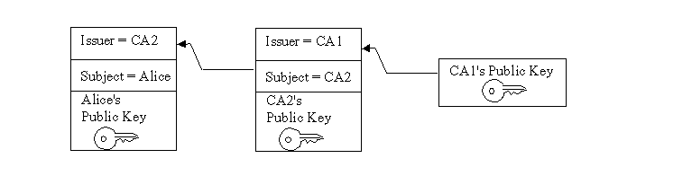

JavaTM Certification Path API 는, 증명서 패스 ( 「증명서 체인」이라고도 불린다)를 취급하기 위한 클래스와 인터페이스로 구성됩니다. 증명서 패스는, 순서 붙이고 된 증명서 리스트입니다. 증명서 패스는, 특정의 검증 규칙을 채우는 경우에, 공개키로부터 주체에의 매핑을 안전하게 확립하기 위해서 사용됩니다.
이 API 는, 증명서 패스를 작성, 구축, 및 검증하기 위한 인터페이스 및 추상 클래스를 정의합니다. 구현은, 프로바이더 베이스의 인터페이스를 사용해 플러그 인 됩니다. API 는,「Java 암호화 아키텍쳐(architecture) 레퍼런스 가이드」로 설명되고 있는암호화 서비스 프로바이더 아키텍쳐(architecture)에 근거하고 있습니다.
또, API 에는, PKIX 표준에 따라 X 509 증명서 패스를 구축 및 검증하기 위한 알고리즘 특정형의 클래스가 포함됩니다. PKIX 표준은,IETF PKIX 워킹 그룹에 의해 개발됩니다.
이 API 는, 처음은 Java Community ProcessSM 프로그램을 사용해 지정되었던 (JavaTM Specification Request (JSR) 000055). 이 API 는, Java 2 Standard Edition (JDK), v 1.4 로부터 JavaTM SDK 에 포함되었습니다. JSR 의 자세한 것은,JSR 055 홈 페이지를 참조해 주세요.
사례
Certification Path API 의 개발에 종사한 분들, 및 유용한 코멘트나 기술적인 어드바이스를 주신 분들에게 감사 드리겠습니다. Certification Path API 를 설계 및 개발해, Java Community Process 에 준거한 작업 기준을 정한 Sun Microsystems Laboratories 팀의 멤버에게는, 진심으로의 감사를 바칩니다. 이 팀의 멤버는, Anne Anderson, Yassir Elley, Geoff Goodell, Steve Hanna, Sean Mullan, Radia Perlman, 및 Seth Proctor 의 각 여러분입니다.전문가 그룹은, Java Community Process 를 사용해 API 를 개량해, 조정을 베푸는 작업의 일익을 담당했습니다. 이 그룹의 멤버는, 이하의 분들입니다.
Sun Microsystems 의 Maxine Erlund, Steve Hanna, Phil Rosenzweig 및 Bob Sproull 의 각 여러분에게는, 지도와 통찰을 제공해 주셨습니다. Sun Microsystems 의 Java Security, Networking and Naming Group 의 멤버 (특히 Sharon Liu, Jeff Nisewanger, Gary Ellison, 및 Andreas Sterbenz 의 각 여러분)에게는, 귀중한 코멘트나 지원를 받았습니다. 그 외, 귀중한 코멘트나 어드바이스를 많은 기술 멤버 (특히 Mary Dageforde, Edward Dobner, Tom Gindin, Jan Luehe, David Kuehr-McLaren, Parag Salvi, Alexei Semidetnov, 및 Yanni Zhang 의 각 여러분) 매운 다만 왔습니다.
- Peter Hesse, CygnaCom Solutions, An Entrust Technologies
- Sean Mullan, Sun Microsystems (스펙 리드)
- Anthony Nadalin, IBM
- Bob Naugle, Bluestone Software
- Hemma Prafullchandra, Verisign
- Ming Yung, DSTC
이 문서의 대상 독자
이 문서는, 다음의 2 개의 조건의 어느 쪽인가에 해당하는, 경험 있는 개발자를 대상으로 하고 있습니다.
증명서 패스를 구축 또는 검증하는, 시큐리티 보호된 어플리케이션을 설계하는 사람
증명서 패스를 구축 또는 검증하기 위한 서비스 프로바이더 구현을 기술하는 사람
관련 문서
이 문서에서는, 독자가 벌써 다음의 문서를 읽고 있는 것을 전제로 하고 있습니다.
처음에
공개키 어플리케이션 및 시스템의 사용자는, 주체의 공개키가 진짜인 것, 즉, 관련하는 비공개키가 주체에 의해 소유되고 있는 것을 확신하고 있을 필요가 있습니다. 공개키 증명서는, 이 신뢰를 확립하는데 사용됩니다. 공개키 (또는 아이덴티티) 증명서 는, 공개키의 아이덴티티에의 바인딩입니다. 아이덴티티는, 다른 엔티티 (많은 경우증명서 발행국 (CA)으로 불린다)의 비공개키로 디지털 서명 됩니다. 이 항의 나머지의 부분에서는, CA 라고 하는 용어는, 증명서에 서명하는 엔티티의 의미로 사용됩니다.
사용자는, 주체의 공개키 증명서에 서명한 CA 의 공개키의 신뢰할 수 있는 카피를 가지고 있지 않은 경우, 서명하고 있는 CA 를 보증하는 다른 공개키 증명서가 필요합니다. 이 논리는, 증명서 체인 (또는 증명서 패스)을신뢰할 수 있는 엥커또는가장 신뢰할 수 있는 CA 로부터 검출될 때까지, 재귀적으로 타겟의 주체 (일반적으로엔드엔티티로 불린다)에 적용됩니다. 일반적으로,가장 신뢰할 수 있는 CA 는, 사용자가 직접 신뢰하는 CA 앞으로 보내 발행한 증명서에 의해 지정됩니다. 일반적으로 증명서 패스는 순서 붙이고 된 증명서의 리스트로, 일반적으로의 경우, 엔드엔티티의 공개키 증명서와 0 개 이상의 부가적인 증명서로 구성됩니다. 일반적으로, 증명서 패스에는 1 개 이상의 encode가 있습니다. 이것에 의해, 증명서 패스는, 안전하게 네트워크를 통해서 전송되거나 다른 operating system 아키텍쳐(architecture)에 송신 되거나 합니다.
그림 1 은, 가장 신뢰할 수 있는 CA 의 공개키 (CA 1)로부터 타겟의 주체 (Alice)에의 증명서 패스를 나타내고 있습니다. 증명서 패스는, CA 2 라는 이름의 중간 CA 를 개입시켜, Alice 의 공개키와의 신뢰를 확립합니다.

그림 1:증명 패스증명서 패스는, 주체의 공개키의 신뢰를 확립하기 위해(때문에), 신뢰하기 전에 검증할 필요가 있습니다. 검증에서는, 서명을 검증하거나 각 증명서가 삭제되지 않은 것을 확인하거나 하는 등, 증명서 패스에 포함되어 있는 증명서에 대한 다양한 체크를 실시합니다. PKIX 표준은, X. 509 증명서로 구성되는 증명서 패스의 검증에 관한 알고리즘을 정의합니다.
사용자는, 가장 신뢰할 수 있는 CA 로부터 주체에의 증명서 패스를 가지고 있지 않은 것이 있습니다. 증명서 패스를 구축 또는 검출하는 서비스의 제공은, 공개키에 대응하는 시스템의 중요한 기능입니다. RFC 2587 은, LDAP (Lightweight Directory Access Protocol) schema 정의를 정의합니다. LDAP schema 정의에 의해, LDAP 디렉토리 서비스 프로토콜을 사용한 X. 509 증명서 패스의 검출이 용이하게 됩니다.
증명서 패스의 구축 및 검증은, SSL/TLS, S/MIME, IPSEC 등, 많은 표준 시큐리티 프로토콜의 중요한 일부입니다. JavaTM Certification Path API 는, 이 기능을 어플리케이션에 통합할 필요가 있는 개발자에게, 클래스 및 인터페이스세트를 제공합니다. 이 API 는, 특정의 증명서 패스의 구축, 또는 검증 알고리즘용으로 서비스 프로바이더 구현을 기술할 필요가 있는 개발자, 및 구현에 의존하지 않는 방식에 의한 증명서 패스의 작성, 구축, 및 검증을 위해서(때문에) 표준 알고리즘에 액세스 할 필요가 있는 개발자에게 있어 편리합니다.
Java Certification Path API 의 코어 클래스는, 알고리즘 및 구현에 의존하지 않는 방식의 증명서 패스의 기능을 지원하는 인터페이스 및 클래스로 구성되어 있습니다. 또, API 에는, PKIX 표준에 준거한, 알고리즘에 의존하지 않는 클래스세트가 포함되어 있습니다. PKIX 표준에 대해서는,「PKIX 클래스」섹션으로 설명합니다. API 는, 증명서를 처리하는 기존의 JavaTM Standard Edition (J2SDK) java.security.cert 패키지에 구축되어 그 기능을 확장합니다. 코어 클래스는, 다음과 같이 기본, 검증, 구축, 및 스토리지라고 하는 4 개의 클래스 카테고리로 나눌 수가 있습니다.
CertPath,CertificateFactory,CertPathParameters
CertPathValidator,CertPathValidatorResult
CertPathBuilder,CertPathBuilderResult
CertStore,CertStoreParameters,CertSelector,CRLSelector
다음의 섹션에서는, 각 클래스 및 인터페이스의 가장 일반적으로 사용되고 있는 메소드를 설명합니다. 몇개의 클래스의 사용예는, 이 가이드 전체를 통해서, 몇번인가 나옵니다. Certification Path API 클래스의 완전한 레퍼런스 문서는, 다음과 같습니다.
CertPath API 의 클래스 및 인터페이스의 대부분은, thread에 대해서 안전하지는 않습니다. 그러나, 이 가이드 및 API 스펙으로 언급된 예외도 있습니다. thread에 대해서 안전하지 않은 단일의 객체에 동시에 액세스 할 필요가 있는 복수의 thread는, 서로 동기 해 필요한 락을 실시하는 것으로 합니다. 복수의 thread가 각각 개별의 객체를 처리하는 경우, 그러한 thread는 동기 할 필요는 없습니다.
기본의 증명서 패스 클래스는, 증명서 패스를 encode 및 표시하는 기본적인 기능을 제공합니다. Java Certification Path API 의 주요한 기본 클래스는 CertPath 입니다. 이 클래스는, 모든 형태의 증명서 패스로 공유되는 범용적인 부분을 캡슐화합니다. 어플리케이션은,CertificateFactory 클래스의 인스턴스를 사용해 CertPath 객체를 작성합니다.
CertPath 클래스는, 증명서 패스의 추상 클래스입니다. 모든 증명서 패스 객체가 공유하는 기능을 정의합니다. 다양한 증명서 패스의 형태는, 그것이 다른 내용 및 순서부 schema를 가지고 있어도,CertPath 클래스를 서브 클래스화하는 것에 의해 구현할 수 있습니다. 모든 CertPath 객체는, 직렬화 가능, 불변, 한편 thread에 대해서 안전합니다. 게다가 다음의 특징을 갖추고 있습니다.
A 형
이것은, 증명서 패스의 증명서의 형태와 대응하고 있습니다. 예를 들어, X. 509 가 이것에 해당합니다. CertPath 의 형태는, 다음의 메소드를 사용해 취득됩니다. public String getType()
표준적인 증명서의 형태의 자세한 것은,「Java 암호화 아키텍쳐(architecture) 레퍼런스 가이드」의 「부록 A」를 참조해 주세요.
증명서 리스트
getCertificates 메소드는, 증명서 패스에 포함되는 증명서의 리스트를 돌려줍니다.
public abstract List<? extends Certificate> getCertificates()이 메소드는, 0 개 이상의 java.security.cert.Certificate 객체의 List 를 돌려줍니다. 반환되는
List 및 그 중에 포함되는 Certificates 는,CertPath 객체의 내용을 보호하기 위해(때문에), 변경할 수 없습니다.
반환되는 증명서의 순서부는, 형태에 의존합니다. 규칙에 의해, X. 509 형의 CertPath 객체내의 증명서는, 타겟이 되는 증명서로부터 순서에 늘어놓을 수 있어 신뢰할 수 있는 엥커에 의해 발행된 증명서가 마지막에 놓여집니다. 즉, 증명서의 발행자는, 그 다음에 계속되는 증명서의 주체가 됩니다. TrustAnchor 를 나타내는 증명서를 증명서 패스에 포함할 수 없습니다. 다만, 검증되어 있지 않은 X. 509 의 CertPath 는, 이 규칙에 따르지 않은 것이 있습니다. PKIX CertPathValidator 는, 이 규칙의 위반을 검출하는 것으로써, 증명서 패스가 무효가 되어 CertPathValidatorException. 하지만 throw 되는 것을 막습니다. 1 개(살) 이상의 encode
각 CertPath 객체는, 1 개(살) 이상의 encode를 지원합니다. 이것들은 증명서 패스의 외부 encode 형식에서, 네트워크를 통해서 패스를 다른 조직에 전송 할 때에, 패스의 표준 표시가 Java 가상 머신의 외부에서 필요한 때에 사용합니다. 각 패스는 디폴트의 형식에서 encode 되어 그 바이트는 다음의 메소드를 사용해 돌려주어집니다.
public abstract byte[] getEncoded()한편,getEncoded(String) 메소드는, encode 형식을 String (예: 「PKCS7」)로 지정하는 것으로써, 지원되는 특정의 encode 형식을 돌려줍니다. 표준의 encode 형식의 리스트는, 부록 A 로 정의되고 있습니다.
public abstract byte[] getEncoded(String encoding)또,getEncodings 메소드는, 지원되는 encode 형식 String 에서도 반복자를 돌려줍니다 (디폴트의 encode 형식이 최초로 반환된다).
public abstract Iterator<String> getEncodings()
모든 CertPath 객체는 또,Serializable 입니다. CertPath 객체는, 직렬화중에, 대체의 CertPathRep 객체로 해석 처리됩니다. 이것에 의해, 기본적인 구현에 관계없이,CertPath 객체를 동등의 표현에 직렬화할 수 있습니다.
CertPath 객체는,CertificateFactory 를 사용해, encode 된 바이트 배열 또는 Certificate 의 리스트로부터 생성됩니다. 한편,CertPathBuilder 는, 가장 신뢰할 수 있는 CA 로부터 특정의 주체에의 CertPath 를 찾기 위해서(때문에) 사용됩니다. CertPath 객체가 작성되면(자), 그것은 CertPathValidator 의 validate 메소드에게 건네져 검증됩니다. 이러한 개념의 상세한 것에 대하여는, 계속되는 섹션으로 설명합니다.
CertificateFactory 클래스는, 증명서 팩토리의 기능을 정의하는엔진 클래스입니다. 이 클래스는, J2SDK, v 1.4 보다 전의 릴리스에서는,Certificate 및 CRL 객체의 생성에 사용되고 있었습니다. J2SDK, v1. 4 에서는, 클래스가 확장되어 증명서 패스 (CertPath ) 객체의 생성에도 사용되게 되었습니다. CertificateFactory 를 CertPathBuilder 와 혼동 하지 말아 주세요. CertPathBuilder (후술)는, 증명서 패스가 존재하지 않을 때에, 증명서 패스의 검출 또는 발견에 사용됩니다. 그에 대한 CertificateFactory 는, 증명서 패스가 벌써 검출되고 있어, encode 된 바이트 배열 또는 Certificate 의 배열 등, 다른 형식에서 존재하는 내용으로부터 호출해 옆이 CertPath 객체의 인스턴스를 생성할 필요가 있을 때 사용됩니다.
CertificateFactory 객체의 작성
CertificateFactory객체의 작성에 관한 자세한 것은, 「Java 암호화 아키텍쳐(architecture) 레퍼런스 가이드」의「CertificateFactory」섹션을 참조해 주세요.CertPath 객체의 생성
CertificateFactory 의 인스턴스는,Certificate 객체의
리스트, 또는CertPath의 encode 된 형식을 포함한InputStream로부터, CertPath 객체를 생성합니다.CertPath와 같이, 각각의 CertificateFactory 는, 증명서 패스 (PKCS#7 등)의 디폴트의 encode 형식을 지원합니다.CertPath객체를 생성해, 그 객체를 입력 스트림로부터 (디폴트의 encode 형식에서) 읽힌 데이터를 사용해 초기화하려면 ,generateCertPath 메소드를 사용합니다.public final CertPath generateCertPath(InputStream inStream)특정의 encode 형식으로부터 읽힌 데이터를 사용하는 경우는 다음과 같이 됩니다.
public final CertPath generateCertPath(InputStream inStream, String encoding)지원되고 있는 encode 형식을 조사하려면 ,getCertPathEncodings 메소드를 사용합니다 (디폴트의 encode가 최초로 반환된다).
public final Iterator<String> getCertPathEncodings()증명서 패스 객체를 Certificate 객체의리스트로부터 생성하려면 , 다음의 메소드를 사용합니다.
public final CertPath generateCertPath(List<? extends Certificate> certificates)
CertificateFactory는, 팩토리와 같은 형태의Certificate로 구성된 CertPath 객체를 항상 돌려줍니다. 예를 들어, X. 509 형의 CertificateFactory 는,java.security.cert.X509Certificate 의 인스턴스인 증명서로 구성된 CertPath 객체를 돌려줍니다.다음의 코드예는, PKCS#7 로 encode 된, 파일에 포함되고 있는 증명서 응답으로부터 증명서 패스를 생성하는 방법을 나타내고 있습니다.
// open an input stream to the file FileInputStream fis = new FileInputStream(filename); // instantiate a CertificateFactory for X. 509 CertificateFactory cf = CertificateFactory.getInstance("X. 509"); // extract the certification path from // the PKCS7 SignedData structure CertPath cp = cf.generateCertPath(fis, "PKCS7"); // print each certificate in the path List<Certificate> certs = cp.getCertificates(); for (Certificate cert : certs) { System.out.println(cert); }다음에,KeyStore로부터 증명서 체인을 페치 해,CertificateFactory를 사용해CertPath로 변환하는 다른 코드예를 나타냅니다.// instantiate a KeyStore with type JKS KeyStore ks = KeyStore.getInstance("JKS"); // load the contents of the KeyStore ks.load(new FileInputStream(". /keystore"), "password". toCharArray()); // fetch certificate chain stored with alias "sean" Certificate[] certArray = ks.getCertificateChain("sean"); // convert chain to a List List certList = Arrays.asList(certArray); // instantiate a CertificateFactory for X. 509 CertificateFactory cf = CertificateFactory.getInstance("X. 509"); // extract the certification path from // the List of Certificates CertPath cp = cf.generateCertPath(certList);
generateCertificates 라는 이름의 CertificateFactory 에,Certificate 의 순서를 구문 분석 하는 기존의 메소드가 있는 것에 주목해 주세요. 복수의 증명서로부터 완성되는 encode에서는, 서로 관련성이 없다고 생각되는 증명서의 컬렉션을 해석하는 경우에,generateCertificates 를 사용합니다. 그 이외의 encode에서는,CertPath 를 생성해,CertPathValidator (후술)로 검증하는 경우에,generateCertPath 를 사용합니다.
CertPathParameters 인터페이스는, 특정의 증명서 패스 빌더 또는 검증 알고리즘으로 사용되는 일련의 파라미터의 투명한 표현입니다. 이 인터페이스의 주된 목적은, 모든 증명서 패스의 파라미터의 스펙을 그룹화 하는 것 ( 및 그러한 파라미터에 안전한 형태를 제공하는 것)입니다. CertPathParameters 인터페이스는,Cloneable 인터페이스를 확장해, 예외를 throw 하지 않는 clone() 메소드를 정의합니다. 이 인터페이스의 모든 고정 구현은, 필요에 따라서 Object.clone() 메소드를 구현해, 오버라이드(override) 합니다. 이것에 의해, 어플리케이션은,CertPathParameters 객체를 복제할 수 있습니다.
CertPathParameters 인터페이스를 구현하고 있는 객체는,CertPathValidator 및 CertPathBuilder 클래스의 메소드에 인수로서 건네받습니다. 일반적으로,CertPathParameters 인터페이스의 고정 구현은, 특정의 증명서 패스의 구축 또는 검증 알고리즘에 고유의 입력 파라미터세트를 보관 유지합니다. 예를 들어,PKIXParameters 클래스는, PKIX 증명서 패스 검증 알고리즘의 입력 파라미터세트를 보관 유지하는 CertPathParameters 인터페이스의 구현입니다. 이러한 파라미터의 1 개에, 호출측이 검증 처리의 엥커에 대해 신뢰한다, 가장 신뢰할 수 있는 CA 세트가 있습니다. 이 파라미터에 대해서는 특히,PKIXParameters 클래스를 취급한 섹션으로 자세하게 설명합니다.
Java Certification Path API 에는, 증명서 패스를 검증하는 클래스 및 인터페이스가 포함되어 있습니다. 어플리케이션은,CertPathValidator 클래스의 인스턴스를 사용해,CertPath 객체를 검증합니다. 성공하면(자),CertPathValidatorResult 인터페이스를 구현하는 객체에, 검증 알고리즘의 결과가 돌려주어집니다.
CertPathValidator 클래스는, 증명서 패스의 검증에 사용되는엔진 클래스입니다.
CertPathValidator 객체의 생성
다른 엔진 클래스와 같게, 특정의 검증 알고리즘용의 CertPathValidator 객체를 가져오려면 ,CertPathValidator 클래스의 getInstance static 팩토리 메소드의 1 개를 호출합니다.
public static CertPathValidator getInstance(String algorithm) public static CertPathValidator getInstance(String algorithm, String provider) public static CertPathValidator getInstance(String algorithm, Provider provider)algorithm파라미터는, 증명서 패스 검증 알고리즘의 이름 ( 「PKIX」 등)입니다. 표준의CertPathValidator알고리즘명은,부록 A 의 리스트에 기재되어 있습니다.증명서 패스의 검증
CertPathValidator 객체가 생성되면(자),validate 메소드를 호출해, 검증하는 증명서 패스 및 알고리즘 특정형의 파라미터 세트를 건네주는 것에 의해, 패스를 검증할 수 있습니다.
public final CertPathValidatorResult validate(CertPath certPath, CertPathParameters params) throws CertPathValidatorException, InvalidAlgorithmParameterException검증 알고리즘이 성공하면(자),CertPathValidatorResult 인터페이스를 구현하는 객체에 결과가 돌려주어집니다. 그렇지 않은 경우는,CertPathValidatorException 가 throw 됩니다. CertPathValidatorException 에는,CertPath 를 돌려주는 메소드가 포함됩니다. 또, 필요에 따라서, 알고리즘의 실패를 일으킨 증명서의 인덱스나, 에러의 근본이 되는 예외 또는 원인을 돌려주는 메소드가 포함됩니다.
validate 메소드에게 건네지는 CertPath 및
CertPathParameters는, 검증 알고리즘에 의해 지원된 형태일 필요가 있습니다. 그렇지 않은 경우는,InvalidAlgorithmParameterException가 throw 됩니다. 예를 들어, PKIX 알고리즘을 구현하는 CertPathValidator 인스턴스는, X. 509 형의 CertPath 객체, 및PKIXParameters의 인스턴스인CertPathParameters를 검증합니다.
CertPathValidatorResult 인터페이스는, 증명서 패스 검증 알고리즘의 성공 결과 또는 출력의 투명한 표현입니다. 이 인터페이스의 주된 목적은, 모든 검증 결과를 그룹화 하는 것 ( 및 그러한 검증 결과에 안전한 형태를 제공하는 것)입니다. CertPathParameters 인터페이스와 같게,CertPathValidatorResult 는 Cloneable 를 확장해, 예외를 throw 하지 않는 clone() 메소드를 정의합니다. 이것에 의해, 어플리케이션은,CertPathValidatorResult 객체를 복제할 수 있습니다.
CertPathValidatorResult 인터페이스를 구현하고 있는 객체는, CertPathValidator 의 validate 메소드에 의해 돌려주어집니다 (성공시만. 그렇지 않은 경우는,CertPathValidatorException 는 에러의 기술과 함께 throw 됩니다). 일반적으로,CertPathValidatorResult 인터페이스의 고정 구현은, 특정의 증명서 패스의 검증 알고리즘에 고유의 출력 파라미터세트를 보관 유지합니다. 예를 들어,PKIXCertPathValidatorResult 클래스는, PKIX 증명서 패스 검증 알고리즘의 출력 파라미터세트를 취득하는 메소드를 포함한 CertPathValidatorResult 인터페이스의 구현입니다. 이러한 파라미터의 1 개에, 유효한 정책 트리가 있습니다. 이 파라미터에 대해서는 특히,PKIXCertPathValidatorResult 클래스를 취급한 섹션으로 자세하게 설명합니다.
다음의 간단한 코드예에서는,CertPathValidator 를 작성해, 증명서 패스의 검증에 사용하는 방법을 나타냅니다. 이 예는,validate 메소드에게 건네지는 CertPath 및 CertPathParameters 객체가 사전에 작성되고 있는 것을 전제로 하고 있습니다. 보다 자세한 예는, PKIX 클래스를 설명한 섹션에 있습니다.
// create CertPathValidator that implements the "PKIX" algorithm
CertPathValidator cpv = null;
try {
cpv = CertPathValidator.getInstance("PKIX");
} catch (NoSuchAlgorithmException nsae) {
System.err.println(nsae);
System.exit(1);
}
// validate certification path ("cp") with specified parameters ("params")
try {
CertPathValidatorResult cpvResult = cpv.validate(cp, params);
} catch (InvalidAlgorithmParameterException iape) {
System.err.println("validation failed: " + iape);
System.exit(1);
} catch (CertPathValidatorException cpve) {
System.err.println("validation failed: " + cpve);
System.err.println("index of certificate that caused exception: "
+ cpve.getIndex());
System.exit(1);
}
Java Certification Path API 에는, 증명서 패스를 구축하는 (또는 검출한다) 유익의 클래스가 포함되어 있습니다. 어플리케이션은,CertPathBuilder 클래스의 인스턴스를 사용해,CertPath 객체를 구축합니다. 성공하면(자),CertPathBuilderResult 인터페이스를 구현하는 객체에, 구축의 결과가 돌려주어집니다.
CertPathBuilder 클래스는, 증명서 패스의 구축에 사용되는엔진 클래스입니다.
CertPathBuilder 객체의 생성
다른 엔진 클래스와 같게, 특정의 구축 알고리즘용의 CertPathBuilder 객체를 가져오려면 ,CertPathBuilder 클래스의 getInstance static 팩토리 메소드를 호출합니다.
public static CertPathBuilder getInstance(String algorithm) public static CertPathBuilder getInstance(String algorithm, String provider) public static CertPathBuilder getInstance(String algorithm, Provider provider)algorithm파라미터는, 증명서 패스 구축 알고리즘의 이름 ( 「PKIX」 등)입니다. 표준의CertPathBuilder알고리즘명은,부록 A 의 리스트에 기재되어 있습니다.증명서 패스의 구축
CertPathBuilder 객체가 작성되면(자),build 메소드를 호출해, 알고리즘 특정형의 파라미터 스펙을 건네주는 것에 의해, 패스를 구축할 수 있습니다.
public final CertPathBuilderResult build(CertPathParameters params) throws CertPathBuilderException, InvalidAlgorithmParameterException구축 알고리즘이 성공하면(자),CertPathBuilderResult 인터페이스를 구현하는 객체에 결과가 돌려주어집니다. 실패했을 경우는, 예를 들어, 기본으로 되는 예외 (존재하는 경우)와 에러 메세지 등, 에러에 대한 정보를 포함한 CertPathBuilderException 가 throw 됩니다.
build 메소드에게 건네지는
CertPathParameters는, 구축 알고리즘에 의해 지원된 형태일 필요가 있습니다. 그렇지 않은 경우는,InvalidAlgorithmParameterException가 throw 됩니다.
CertPathBuilderResult 인터페이스는, 증명서 패스 구축 알고리즘의 결과 또는 출력의 투명한 표현입니다. 이 인터페이스에는, 다음에 나타내도록(듯이), 정상적으로 구축된 증명서 패스를 돌려주는 메소드가 포함됩니다.
public CertPath getCertPath()
CertPathBuilderResult 인터페이스의 목적은, 모든 구축 결과를 그룹화 하는 것 ( 및 그러한 구축 결과에 안전한 형태를 제공하는 것)입니다. CertPathValidatorResult 인터페이스와 같게,CertPathBuilderResult 는 Cloneable 를 확장해, 예외를 throw 하지 않는 clone() 메소드를 정의합니다. 이것에 의해, 어플리케이션은,CertPathBuilderResult 객체를 복제할 수 있습니다.
CertPathBuilderResult 인터페이스를 구현하는 객체는,CertPathBuilder 의 build 메소드에 의해 돌려주어집니다.
다음의 간단한 코드예에서는,CertPathBuilder 를 작성해, 증명서 패스의 구축에 사용하는 방법을 나타냅니다. 이 예는,build 메소드에게 건네지는 CertPathParameters 객체가 사전에 작성되고 있는 것을 전제로 하고 있습니다. 보다 자세한 예는, PKIX 클래스를 설명한 섹션에 있습니다.
// create CertPathBuilder that implements the "PKIX" algorithm
CertPathBuilder cpb = null;
try {
cpb = CertPathBuilder.getInstance("PKIX");
} catch (NoSuchAlgorithmException nsae) {
System.err.println(nsae);
System.exit(1);
}
// build certification path using specified parameters ("params")
try {
CertPathBuilderResult cpbResult = cpb.build(params);
CertPath cp = cpbResult.getCertPath();
System.out.println("build passed, path contents: " + cp);
} catch (InvalidAlgorithmParameterException iape) {
System.err.println("build failed: " + iape);
System.exit(1);
} catch (CertPathBuilderException cpbe) {
System.err.println("build failed: " + cpbe);
System.exit(1);
}
Java Certification Path API 에는, 리포지터리(repository)로부터 증명서 및 CRL 를 취득하는 CertStore 클래스도 포함되어 있습니다. 이 클래스를 사용하면(자), 호출측은,CertPathValidator 또는 CertPathBuilder 의 구현이 증명서 및 CRL 의 검출에 사용하는 리포지터리(repository)를 지정할 수 있습니다 (예에 대해서는,PKIXParameters 의addCertStores 메소드를 참조).
CertPathValidator 구현은, 호출측이 콜백 기구로서 지정한 CertStore 객체를 사용해 CRL 를 페치 해, 취소의 체크를 실시합니다. 같이CertPathBuilder 구현은,CertStore 를 콜백 기구로서 사용해 증명서를 페치 합니다. 또, 취소의 체크를 실시하고 있는 경우는 CRL 를 페치 합니다.
CertStore 클래스는, 증명서 및 증명서의 취소 리스트 (CRL)의 리포지터리(repository)로서 기능하는엔진 클래스 입니다. 이 클래스는,CertPathBuilder 및 CertPathValidator 의 구현에 의해, 증명서 및 CRL 의 검색을 위해, 또는 범용의 증명서 및 CRL 의 취득 기구로서 사용됩니다.
CertStore 는, 비공개키 및 신뢰할 수 있는 증명서의 캐쉬에의 액세스를 제공하는 java.security.KeyStore 클래스와는 달라, 매우 커질 가능성이 있는, 신뢰되지 않는 증명서 및 CRL 의 리포지터리(repository)에의 액세스를 제공하도록(듯이) 설계되고 있습니다. 예를 들어,CertStore 의 LDAP 구현은, 1 개(살) 이상의 디렉토리에 포함되고 있는 증명서 또는 CRL 에 대한 액세스를, LDAP 프로토콜을 사용해 제공합니다.
CertStore 객체의 모든 public 메소드는, thread에 대해서 안전합니다. 즉, 단일의 (또는 복수의) CertStore 객체상에서, 복수의 thread가 이러한 메소드를 동시에 호출해도, 악영향은 없습니다. 이것에 의해, 예를 들어 CertPathBuilder 는, CRL 를 검색하면서, 동시에 다른 증명서를 검색할 수가 있습니다.
CertStore 객체의 생성
다른 엔진 클래스와 같게, 특정의 리포지터리(repository)형용의 CertStore 객체를 가져오려면 ,CertStore 클래스에서 이하의 getInstance static 팩토리 메소드의 어떤 것인지를 호출합니다.
public static CertStore getInstance(String type, CertStoreParameters params) public static CertStore getInstance(String type, CertStoreParameters params, String provider) public static CertStore getInstance(String type, CertStoreParameters params, Provider provider)type파라미터는, 증명서 리포지터리(repository)형 ( 「LDAP」등)의 이름입니다. 표준의CertStore형은,부록 A 의 리스트에 기재되어 있습니다.초기화 파라미터 (
params)는, 리포지터리(repository)형에 고유의 것입니다. 예를 들어, 서버 베이스의 리포지터리(repository)의 초기화 파라미터는, 서버의 호스트명 및 포트를 포함합니다. 파라미터가 이CertStore형에 대해 무효인 경우,InvalidAlgorithmParameterException가 throw 됩니다.getCertStoreParameters메소드는,CertStore의 초기화에 사용된CertStoreParameters를 돌려줍니다.public final CertStoreParameters getCertStoreParameters()증명서의 취득
CertStore 객체를 생성하면(자),getCertificates 메소드를 사용해 리포지터리(repository)로부터 증명서를 취득할 수 있습니다. 이 메소드는,CertSelector 객체 (자세한 것은 후술)를 인수로서 가져옵니다. 이 인수는, 어느 증명서가 돌려주어질까를 결정하는 일련의 선택 조건을 지정합니다.
public final Collection<? extends Certificate> getCertificates(CertSelector selector) throws CertStoreException이 메소드는, 선택 조건을 채우는 java.security.cert.Certificate 객체의 Collection 를 돌려줍니다. 조건이 채우는 것이 없는 경우는, 빈 상태(empty)의 Collection 가 돌려주어집니다. 원격 리포지터리(repository)와의 통신 장해 등, 예기치 않은 에러 상태가 생겼을 경우는, 일반적으로,
CertStoreException가 throw 됩니다.어떤 종류의 CertStore 구현에서는, 지정한 선택 조건을 채우는 증명서 또는 CRL 를 리포지터리(repository) 전체로 검색할 수 없습니다. 이러한 인스턴스에서는,CertStore 구현은, 증명서 및 CRL 를 검색하는 셀렉터로 지정된 정보를 사용합니다. 예를 들어, LDAP CertStore 는, 디렉토리내의 모든 엔트리를 검색하지 않는 경우가 있습니다. 그 대신에, 찾고 있는 증명서를 포함하고 있을 가능성이 있는 엔트리만을 검색합니다. LDAP CertStore 가 어느 엔트리를 검색해야할 것인가를 판단하기 위한 충분한 정보를 CertSelector 가 제공하지 않는 경우, LDAP CertStore 는 CertStoreException 를 throw 합니다.
CRL 의 취득
getCRLs 메소드를 사용해 리포지터리(repository)로부터 CRL 를 취득할 수도 있습니다. 이 메소드는,CRLSelector 객체 (자세한 것은 후술)를 인수로서 가져옵니다. 이 인수는, 어느 CRL 가 돌려주어질까를 결정하는 일련의 선택 조건을 지정합니다.
public final Collection<? extends CRL> getCRLs(CRLSelector selector) throws CertStoreException이 메소드는, 선택 조건을 채우는 java.security.cert.CRL 객체의 Collection 를 돌려줍니다. 조건이 채우는 것이 없는 경우는, 빈 상태(empty)의 Collection 가 돌려주어집니다.
CertStoreParameters 인터페이스는, 특정의 CertStore 로 사용되는 파라미터세트의 투명한 표현입니다. 이 인터페이스의 주된 목적은, 모든 증명서 스토리지의 파라미터의 스펙을 그룹화 하는 것 ( 및 그러한 파라미터에 안전한 형태를 제공하는 것)입니다. CertStoreParameters 인터페이스는,Cloneable 인터페이스를 확장해, 예외를 throw 하지 않는 clone 메소드를 정의합니다. 이 인터페이스의 구현은, 필요에 따라서 Object.clone() 메소드를 구현해, 오버라이드(override) 합니다. 이것에 의해, 어플리케이션은,CertStoreParameters 객체를 복제할 수 있습니다.
CertStoreParameters 인터페이스를 구현하고 있는 객체는,CertStore 클래스의 getInstance 메소드에 인수로서 건네받습니다. CertStoreParameters 인터페이스를 구현하고 있는 다음의 2 개의 클래스는, 이 API 로 정의됩니다. LDAPCertStoreParameters 및 CollectionCertStoreParameters 클래스.
LDAPCertStoreParameters 클래스
LDAPCertStoreParameters 클래스는,CertStoreParameters 인터페이스의 구현으로, 증명서 및 CRL 를 LDAP 형의
CertStore로부터 취득하기 위해서 최저한의 초기화 파라미터세트 (디렉토리 서버의 호스트 및 포트 번호)를 보관 유지합니다.이 클래스의 상세한 것에 대하여는,LDAPCertStoreParameters 의 API 문서를 참조해 주세요.
CollectionCertStoreParameters 클래스
CollectionCertStoreParameters 클래스는,CertStoreParameters 인터페이스의 구현으로, 증명서 및 CRL 를 Collection 형의
CertStore로부터 취득하기 위한 초기화 파라미터세트를 보관 유지합니다.이 클래스의 상세한 것에 대하여는,CollectionCertStoreParameters 의 API 문서를 참조해 주세요.
CertSelector 및 CRLSelector 인터페이스는, 증명서 및 CRL 의 컬렉션 또는 큰 그룹으로부터, 증명서 및 CRL 를 선택하기 위한 일련의 조건의 스펙입니다. 인터페이스는 그룹화 되어 모든 셀렉터의 스펙에 형태의 안전성을 제공합니다. 각 셀렉터 인터페이스는,Cloneable 를 확장해, 예외를 throw 하지 않는 clone() 메소드를 정의합니다. 이것에 의해, 어플리케이션은, 어느 CertSelector 또는 CRLSelector 객체도 복제할 수 있습니다.
CertSelector 및 CRLSelector 인터페이스는, 각각 match 라는 이름의 메소드를 정의합니다. match 메소드는,Certificate 또는 CRL 객체를 인수로서 취득해, 객체가 선택 조건을 채우는 경우,true 를 돌려줍니다. 그렇지 않은 경우는,false 를 돌려줍니다. CertSelector 인터페이스의 match 메소드는, 다음과 같이 해 정의됩니다.
public boolean match(Certificate cert)
CRLSelector 인터페이스에 대해서는, 다음과 같이 해 정의됩니다.
public boolean match(CRL crl)
일반적으로, 이러한 인터페이스를 구현하고 있는 객체는,CertStore 클래스의 getCertificates 및 getCRLs 메소드에 파라미터로서 건네받습니다. 이러한 메소드는, 지정된 선택 조건을 채우는 CertStore 리포지터리(repository)로부터,Certificate 또는 CRL 의 Collection 를 돌려줍니다. 또,CertSelector 는, 증명서 패스의 타겟 또는 엔드엔티티 증명서로, 검증의 제약을 지정하기 위해서도 사용됩니다 (PKIXParameters.setTargetCertConstraints 메소드의 예를 참조).
X509CertSelector 클래스는, X. 509 증명서를 선택하기 위한 일련의 조건을 정의하는 CertSelector 인터페이스의 구현입니다. X509Certificate 객체는,match 메소드에 의해 선택되려면 , 지정된 조건의 모든 것을 채울 필요가 있습니다. 이 선택 조건은,CertPathBuilder 구현이 X. 509 증명서 패스를 구축할 때에, 잠재적인 증명서를 검출하기 위해서 사용하도록(듯이) 설계되고 있습니다.
예를 들어,X509CertSelector 의 setSubject 메소드를 사용하면(자), PKIX CertPathBuilder 은, 부분적으로 완성된 체인 중(안)에서, 선행하는 X509Certificate 의 발행자명으로 일치하지 않는 X509Certificate 를 필터에 걸칠 수가 있습니다. X509CertSelector 객체로, 이 조건과 함께 그 외의 조건을 설정하는 것으로써,CertPathBuilder 는, 무관계한 증명서를 파기해,CertPathParameters 객체로 지정한 요건을 채우는 X. 509 증명서 패스를 보다 간단하게 찾을 수가 있습니다.
여기서 설명한 X. 509 증명서의 확장 기능의 정의에 대해서는, http://www.ietf.org/rfc/rfc3280.txt 를 참조해 주세요.
X509CertSelector 객체의 생성
X509CertSelector 객체는, 다음과 같이 해 디폴트의 생성자 을 호출하는 것으로 생성됩니다.
public X509CertSelector()처음은, 조건은 아무것도 설정되어 있지 않습니다 (어느
X509Certificate도 일치).선택 조건의 설정
호출측은, 선택 조건을 사용해 X. 509 증명서가 다른 컴퍼넌트를 조합할 수가 있습니다. 여기에서는, 선택 조건을 설정하는 몇개의 메소드에 대해 설명합니다. 그 외의 메소드의 상세한 것에 대하여는,X509CertSelector 의 API 문서를 참조해 주세요.
setIssuer 메소드는, 발행자의 조건을 설정합니다.
public void setIssuer(X500Principal issuer) public void setIssuer(String issuerDN) public void setIssuer(byte[] issuerDN)지정된 식별명 (
X500Principal,RFC 2253 String, 또는 ASN. 1 DER encode 형식)은, 증명서에 있는 발행자의 식별명과 반드시 일치할 필요가 있습니다. null 의 경우, 발행자의 식별명은 거론되지 않습니다. 식별명의 표현에는, 형태 정의가 적절하고 효율적인 모아 두어X500Principal를 사용하는 것을 추천합니다.같이setSubject 메소드는 주체의 조건을 설정합니다.
public void setSubject(X500Principal subject) public void setSubject(String subjectDN) public void setSubject(byte[] subjectDN)지정된 식별명 (
X500Principal, RFC 2253 String, 또는 ASN. 1 DER encode 형식)은, 증명서에 있는 주체의 식별명과 반드시 일치할 필요가 있습니다. null 의 경우, 주체의 식별명은 거론되지 않습니다.setSerialNumber 메소드는, serialNumber 의 조건을 설정합니다.
public void setSerialNumber(BigInteger serial)지정된 시리얼 번호는, 증명서에 있는 증명서 시리얼 번호와 반드시 일치할 필요가 있습니다. null 의 경우, 증명서 시리얼 번호는 거론되지 않습니다.
setAuthorityKeyIdentifier 메소드는, authorityKeyIdentifier 의 조건을 설정합니다.
public void setAuthorityKeyIdentifier(byte[] authorityKeyID)증명서에는, 지정된 값과 일치하는 Authority Key Identifier 확장 기능이 포함되어 있을 필요가 있습니다. null 의 경우, authorityKeyIdentifier 조건에 관한 확인은 행해지지 않습니다.
setCertificateValid 메소드는, certificateValid 의 조건을 설정합니다.
public void setCertificateValid(Date certValid)지정된 일자는, 증명서의 증명서 유효기간내에 들어갈 필요가 있습니다. null 의 경우, 어느 일자도 유효합니다.
setKeyUsage 메소드는, keyUsage 의 조건을 설정합니다.
public void setKeyUsage(boolean[] keyUsage)증명서의 Key Usage Extension 는, 지정된 KeyUsage 의 값 (true 로 설정되어 있는 값)을 허가할 필요가 있습니다. null 의 경우, keyUsage 의 확인은 행해지지 않습니다.
선택 조건의 취득
각 선택 조건의 현재의 값은, 해당하는 get 메소드를 사용해 취득할 수 있습니다. 이러한 메소드의 상세한 것에 대하여는,X509CertSelector 의 API 문서를 참조해 주세요.
례
여기에서는,X509CertSelector 클래스를 사용해 LDAP CertStore 로부터 X. 509 증명서를 취득하는 예를 채택합니다.
처음에, LDAP 서버의 호스트명 및 포트를 포함한
CertStore객체의 초기화에 사용하는LDAPCertStoreParameters객체를 생성합니다.LDAPCertStoreParameters lcsp = new LDAPCertStoreParameters("ldap.sun.com", 389);다음에,CertStore 객체를 생성해, 다음의 문장과 같이 해,
LDAPCertStoreParameters객체를 건네줍니다.CertStore cs = CertStore.getInstance("LDAP", lcsp);이 호출은, RFC 2587 으로 정의된 schema를 사용해, 증명서 및 CRL 를 LDAP 리포지터리(repository)로부터 취득하는 CertStore 객체를 생성합니다.
다음의 코드의 블록은, 유효기간내의 엔드엔티티의 증명서를 모두 취득하는
X509CertSelector를 확립합니다. 이 증명서는, 1) 디지털 서명을 허가하는 열쇠의 이용법, 및 2) 특정의 전자메일 주소와 함께 주체의 대체명을 가지는 특정의 주체에 발행됩니다.X509CertSelector xcs = new X509CertSelector(); // select only unexpired certificates xcs.setCertificateValid(new Date()); // select only certificates issued to // 'CN=alice, O=xyz, C=us' xcs.setSubject(new X500Principal("CN=alice, O=xyz, C=us")); // select only end-entity certificates xcs.setBasicConstraints(-2); // select only certificates with a digitalSignature // keyUsage bit set (set the first entry in the // boolean array to true) boolean[] keyUsage = {true}; xcs.setKeyUsage(keyUsage); // select only certificates with a subjectAltName of // 'alice@xyz.com' (1 is the integer value of // an RFC822Name) xcs.addSubjectAlternativeName(1, "alice@xyz.com");다음에, 이전에 생성한 CertStore 객체의 getCertificates 메소드에 셀렉터를 건네줍니다.
Collection<Certificate> certs = cs.getCertificates(xcs);PKIX
CertPathBuilder는, 잠재적인 증명서의 검출 및 소트를 용이하게 하기 위한(해), 같은 코드를 사용해, 검증 제약 또는 그 외의 조건을 채우지 않는 잠재적인 증명서를 파기하는 일이 있습니다.
X509CRLSelector 클래스는, X. 509 CRL 를 선택하는 일련의 조건을 정의하는 CRLSelector 인터페이스의 구현입니다. X509CRL 객체는,match 메소드에 의해 선택되려면 , 지정된 조건의 모든 것을 채울 필요가 있습니다. 선택 조건은, 리포지터리(repository)로부터 CRL 를 취득할 필요가 있는 CertPathValidator 또는 CertPathBuilder 구현이, X. 509 증명서 패스에 있는 증명서의 취소 상황을 확인하기 위해서 도움이 되도록(듯이) 설계되고 있습니다.
예를 들어,X509CRLSelector 의 setDateAndTime 메소드를 사용하면(자), PKIX CertPathValidator 는, 지시받았을 때 각의 뒤에 발행된, 또는 지시받았을 때 각의 전에 기한이 지나는 X509CRL 를 필터에 걸칠 수가 있습니다. X509CRLSelector 객체로, 이 조건과 함께 그 외의 조건을 설정하는 것으로써,CertPathValidator 는, 무관계한 CRL 를 파기해, 증명서가 삭제되고 있는지 어떤지를 보다 간단하게 체크할 수가 있습니다.
여기서 설명한 X. 509 CRL 필드 및 확장 기능의 정의에 대해서는,http://www.ietf.org/rfc/rfc3280.txt 를 참조해 주세요.
X509CRLSelector 객체의 생성
X509CRLSelector 객체는, 다음과 같이 해 디폴트의 생성자 을 호출하는 것으로 생성됩니다.
public X509CRLSelector()최초, 조건은 아무것도 설정되어 있지 않습니다 (어느
X509CRL도 일치).선택 조건의 설정
호출측은, 선택 조건을 사용해 X. 509 CRL 가 다른 컴퍼넌트를 조합할 수가 있습니다. 여기에서는, 선택 조건을 설정하는 대부분의 메소드에 대해 설명합니다. 나머지의 메소드의 상세한 것에 대하여는,X509CRLSelector 의 API 문서를 참조해 주세요.
setIssuers및 setIssuerNames 메소드는, issuerNames 의 조건을 설정합니다.public void setIssuers(Collection<X500Principal> issuers) public void setIssuerNames(Collection<? > names)CRL 에 있는 발행자의 식별명은, 지정된 식별명의 적어도 1 개(살)로 일치할 필요가 있습니다.
X500Principal를 사용하는 식별명의 표현은 형태 정의가 적절하고 효율적인 모아 두어setIssuers메소드를 추천합니다.setIssuerNames메소드의 경우,names 인수의 각 엔트리는,String 또는 바이트 배열 (각각, RFC 2253 또는 ASN. 1 DER encode 형식의 이름을 나타낸다)의 어느 쪽인지입니다. null 의 경우, 발행자의 식별명은 거론되지 않습니다.setMinCRLNumber 및 setMaxCRLNumber 메소드는, minCRLNumber 및 maxCRLN 의 조건을 설정합니다.
public void setMinCRLNumber(BigInteger minCRL) public void setMaxCRLNumber(BigInteger maxCRL)CRL 에는, CRL Number 확장 기능이 필요합니다. 이 확장 기능은,setMinCRLNumber 메소드가 불려 갔을 경우로 지정된 값이상이 되어,setMaxCRLNumber 메소드가 불려 갔을 경우로 지정된 값이하가 되는 값을 가집니다. 이러한 메소드의 1 개에게 건네진 값이 null 의 경우, 대응하는 체크는 행해지지 않습니다.
setDateAndTime 메소드는, dateAndTime 의 조건을 설정합니다.
public void setDateAndTime(Date dateAndTime)지정된 일자는, CRL 의 thisUpdate 컴퍼넌트의 값과 같은가, 또는 그것보다 나중에, 한층 더 nextUpdate 컴퍼넌트의 값보다 전일 필요가 있습니다. null 의 경우, dateAndTime 의 체크는 행해지지 않습니다.
setCertificateChecking 메소드는, 취소 상황이 체크되고 있는 증명서를 설정합니다.
public void setCertificateChecking(X509Certificate cert)이것은, 조건이 아닙니다. 특정의 증명서의 취소를 체크할 때에,
CertStore가 관련하는 CRL 를 검색하는데 도움이 되는 옵션 정보입니다. null 가 지정되었을 경우, 이러한 옵션 정보는 제공되지 않습니다. 어플리케이션은, 특정의 증명서의 취소를 체크할 때, 항상 이 메소드를 호출해,CertStore가 올바른 CRL 를 검색해 무관계한 CRL 를 필터 할 수가 있도록, 보다 많은 정보를 제공할 필요가 있습니다.선택 조건의 취득
각 선택 조건의 현재의 값은, 해당하는 get 메소드를 사용해 취득할 수 있습니다. 이러한 메소드의 상세한 것에 대하여는,X509CRLSelector 의 API 문서를 참조해 주세요.
례
CRL 를 LDAP 리포지터리(repository)로부터 취득하는 X509CRLSelector 의 생성 방법은,X509CertSelector 의 예와 같습니다. 특정의 CA 에 의해 발행되어 최소의 CRL 번호를 가지는, 현재의 (현재의 일자 및 시각) CRL 모든 것을 취득하면(자) 가정합니다. 우선,X509CRLSelector 객체를 생성해, 적당한 메소드를 호출해 선택 조건을 설정합니다.
X509CRLSelector xcrls = new X509CRLSelector(); // select CRLs satisfying current date and time xcrls.setDateAndTime(new Date()); // select CRLs issued by 'O=xyz, C=us' xcrls.addIssuerName("O=xyz, C=us"); // select only CRLs with a CRL number at least '2' xcrls.setMinCRLNumber(new BigInteger("2"));다음에,X509CertSelector 의 예로 생성된 CertStore 객체의 getCRLs 메소드에 셀렉터를 건네줍니다.
Collection<CRL> crls = cs.getCRLs(xcrls);
Java Certification Path API 에는,RFC 3280 (Public Key Infrastructure Certificate and Certificate Revocation List (CRL) Profile)로 정의되고 있는 PKIX 증명서 패스 검증 알고리즘으로 사용하기 위해서 모델화 된, 알고리즘 고유 클래스세트도 포함됩니다.
TrustAnchor 클래스
이 클래스는, X. 509 증명서 패스의 검증으로 신뢰할 수 있는 엥커로서 사용되는 「가장 신뢰할 수 있는 CA」를 나타냅니다. 가장 신뢰할 수 있는 CA 에는, CA 의 공개키, CA 의 이름, 및 이 열쇠를 사용해 검증되는 패스세트에 적용되는 제약이 포함됩니다. 이러한 파라미터는, 신뢰할 수 있는
X509Certificate의 형식에서, 또는 개별의 파라미터로서 지정할 수 있습니다.모든
TrustAnchor객체는, 불변으로, thread에 대해서 안전합니다. 즉, 단일의 (또는 복수의)TrustAnchor객체상에서, 이 클래스에 정의된 메소드를 복수의 thread가 동시에 호출해도, 악영향은 없습니다.TrustAnchor객체는, 불변 또한 thread에 대해서 안전하지 않으면 안 되기 때문에, 액세스의 조정을 의식하는 일 없이, 객체를 다양한 코드에 건네줄 수가 있습니다.이 클래스는 PKIX 클래스로서 설명되고 있습니다만, 그 외의 X. 509 증명서 패스의 검증 알고리즘으로 사용되는 일도 있습니다.
TrustAnchor 객체의 생성
TrustAnchor객체를 초기화하려면 , 호출측은, 신뢰할 수 있는X509Certificate또는 공개키와 식별명의 페어로서 「가장 신뢰할 수 있는 CA」를 지정할 필요가 있습니다. 또, 호출측은 옵션으로, 초기화 시에 검증 알고리즘을 신뢰할 수 있는 엥커에 적용하는 이름의 제약을 지정할 수도 있습니다. PKIX 알고리즘에서는, 신뢰할 수 있는 엥커에 적용하는 이름의 제약을 지원할 필요가 없기 때문에, PKIXCertPathValidator또는CertPathBuilder는, 이 파라미터를 지원하는 일 없이 예외를 throw 할 수도 있습니다. 다음의 제약 가운데 1 개를 사용해,TrustAnchor객체를 생성합니다.public TrustAnchor(X509Certificate trustedCert, byte[] nameConstraints) public TrustAnchor(X500Principal caPrincipal, PublicKey pubKey, byte[] nameConstraints) public TrustAnchor(String caName, PublicKey pubKey, byte[] nameConstraints)
nameConstraints파라미터는, NameConstraints 확장 기능의 ASN. 1 DER encode를 포함한 바이트 배열로서 지정됩니다. 이름의 제약이 복호화 할 수 없는 (올바르고 서식 설정되지 않는다) 경우,IllegalArgumentException가 throw 됩니다.파라미터치의 취득
다음과 같이, 대응하는 get 메소드를 사용해, 각 파라미터를 취득할 수 있습니다.
public final X509Certificate getTrustedCert() public final X500Principal getCA() public final String getCAName() public final PublicKey getCAPublicKey() public final byte[] getNameConstraints()신뢰할 수 있는 엥커가 공개키와 이름의 페어로서 지정되고 있는 경우,getTrustedCert메소드는null를 돌려줍니다. 같이 신뢰할 수 있는 엥커가X509Certificate로서 지정되고 있는 경우,getCA,getCAName, 및getCAPublicKey메소드는null를 돌려줍니다.PKIXParameters 클래스
CertPathParameters 인터페이스를 구현하는 이 클래스는, PKIX 증명서 패스의 검증 알고리즘에 의해 정의된 입력 파라미터세트를 지정합니다. 또, 몇개의 유용한 추가 파라미터도 포함하고 있습니다.
X. 509
CertPath객체 및 PKIXParameters 객체는, PKIX 알고리즘을 구현하고 있는 CertPathValidator 인스턴스의 validate 메소드에 인수로서 건네받습니다.CertPathValidator는, 파라미터를 사용해, PKIX 증명서 패스의 검증 알고리즘을 초기화합니다.PKIXParameters 객체의 생성
PKIXParameters객체의 인스턴스를 생성하려면 , 호출측은, PKIX 검증 알고리즘에 의한 정의에 따라 「가장 신뢰할 수 있는 CA」를 지정할 필요가 있습니다. 가장 신뢰할 수 있는 CA 는, 다음과 같이, 2 개의 생성자 가운데 1 개를 사용해 지정할 수 있습니다.public PKIXParameters(Set<TrustAnchor> trustAnchors) throws InvalidAlgorithmParameterException public PKIXParameters(KeyStore keystore) throws KeyStoreException, InvalidAlgorithmParameterException최초의 생성자 을 사용하면(자), 호출측은, 가장 신뢰할 수 있는 CA 를
TrustAnchor객체세트로서 지정할 수 있습니다. 대신에, 호출측은 2 번째의 생성자 을 사용해, 신뢰할 수 있는 증명서의 엔트리를 포함한KeyStore인스턴스를 지정할 수 있습니다. 그 각 엔트리는, 가장 신뢰할 수 있는 CA 로 간주해집니다.파라미터치의 설정
PKIXParameters 객체를 작성하면(자), 호출측은, 다양한 파라미터를 설정하는 (또는 현재의 값을 옮겨놓는다) 일이 생깁니다. 여기에서는, 파라미터를 설정하기 위한 몇개의 메소드에 대해 설명합니다. 이러한 메소드의 상세한 것에 대하여는, PKIXParameters 의 API 문서를 참조해 주세요.
setInitialPolicies 메소드는, PKIX 검증 알고리즘에 의해 지정되었던 대로, 초기 정책 식별자를 설정합니다. Set 의 요소는,String 로서 표현된 객체 식별자 (OID)입니다.
initialPolicies파라미터가 null 인지, 또는 설정되어 있지 않은 경우, 어느 정책도 받아들이고 가능합니다.public void setInitialPolicies(Set<String> initialPolicies)setDate 메소드는, 패스의 타당성을 판정하기 위한 시간을 설정합니다. date 파라미터가 설정되어 있지 않은지, 또는 null 인 경우, 현재의 일자가 사용됩니다.
public void setDate(Date date)setPolicyMappingInhibited 메소드는, 정책 매핑 금지 플래그의 값을 설정합니다. 지정되어 있지 않은 경우, 플래그의 디폴트 값는 false 입니다.
public void setPolicyMappingInhibited(boolean val)setExplicitPolicyRequired 메소드는, 명시적인 정책 요구 플래그의 값을 설정합니다. 지정되어 있지 않은 경우, 플래그의 디폴트 값는 false 입니다.
public void setExplicitPolicyRequired(boolean val)setAnyPolicyInhibited 메소드는, 정책 금지 플래그의 값을 설정합니다. 지정되어 있지 않은 경우, 플래그의 디폴트 값는 false 입니다.
public void setAnyPolicyInhibited(boolean val)setTargetCertConstraints 메소드를 사용하면(자), 호출측은, 타겟 또는 엔드엔티티의 증명서에 제약을 설정할 수 있습니다. 예를 들어, 호출측은, 타겟의 증명서에 특정의 주체명을 포함하도록(듯이) 지정할 수 있습니다. 제약은,
CertSelector객체로서 지정됩니다.selector파라미터가 null 인지, 또는 설정되어 있지 않은 경우, 타겟의 증명서에 제약은 정의되지 않습니다.public void setTargetCertConstraints(CertSelector selector)setCertStores 메소드를 사용하면(자), 호출측은,CertPathValidator 의 PKIX 구현이 패스의 검증용의 CRL 를 검색하기 위해서 사용하는 CertStore 객체의
List를 지정할 수 있습니다. 이것에 의해, CRL 의 위치를 지정하는 확장 가능한 기구가 제공됩니다. setCertStores 메소드는,CertStore 객체의List를 파라미터로서 가져옵니다. 리스트중의 최초의 CertStore 는, 후의 엔트리에 우선합니다.public void setCertStores(List<CertStore> stores)setCertPathCheckers 메소드를 사용하면(자), 호출측은, 구현에 고유의 증명서 패스의 checker를 생성하는 것에 의해 PKIX 검증 알고리즘을 확장할 수 있습니다. 예를 들어, 이 기구는, 비공개 증명서의 확장 정보를 처리하기 위해서 사용됩니다. setCertPathCheckers 메소드는,PKIXCertPathChecker 객체 (후술)의 리스트를 파라미터로서 가져옵니다.
public void setCertPathCheckers(List<PKIXCertPathChecker> checkers)setRevocationEnabled 메소드를 사용하면(자), 호출측은 취소의 체크를 무효로 할 수 있습니다. 취소의 체크는, PKIX 검증 알고리즘에 필요한 체크이므로, 디폴트에서는 유효하게 되어 있습니다. 다만, PKIX 에서는, 취소의 체크 방법은 정의하지 않습니다. 예를 들어, 구현은 CRL 또는 OCSP 를 사용하는 일이 있습니다. 이 메소드를 사용하면(자), 호출측은, 구현으로 디폴트로 설정된 취소 체크 기구가 적당하지 않은 경우에, 그것을 무효로 할 수 있습니다. 그 후로,setCertPathCheckers 메소드를 호출해, 대신이 되는 기구를 구현하는
PKIXCertPathChecker에 건네주는 것으로, 다른 취소 체크 기구를 지정할 수 있습니다.public void setRevocationEnabled(boolean val)setPolicyQualifiersRejected 메소드를 사용하면(자), 호출측은, 정책 수식자의 처리를 유효 또는 무효로 설정할 수 있습니다. PKIXParameters 객체가 생성되면(자), 이 플래그는 true 로 설정됩니다. 이 설정은, 정책 수식자를 처리하기 위한 가장 일반적인 (한편 간단한) 방법을 반영합니다. 보다 복잡한 정책를 사용하는 어플리케이션에서는, 이 플래그를 false 로 설정할 필요가 있습니다.
public void setPolicyQualifiersRejected(boolean qualifiersRejected)파라미터치의 취득
각 파라미터의 현재의 값은, 해당하는 get 메소드를 사용해 취득할 수 있습니다. 이러한 메소드의 상세한 것에 대하여는,PKIXParameters 의 API 문서를 참조해 주세요.
PKIXCertPathValidatorResult 클래스
CertPathValidatorResult 인터페이스를 구현하는 이 클래스는, PKIX 증명서 패스의 검증 알고리즘의 결과를 나타냅니다. 검증 알고리즘의 실행 결과인 유효한 정책 트리 및 법칙의 공개키가 보관 유지되어 그것들을 돌려주기 위한 메소드 (
getPolicyTree()및getPublicKey())가 포함됩니다. PKIXCertPathValidatorResult 의 인스턴스는, PKIX 알고리즘을 구현하는 CertPathValidator 객체의 validate 메소드에 의해 돌려주어집니다.이 클래스의 상세한 것에 대하여는,PKIXCertPathValidatorResult 의 API 문서를 참조해 주세요.
PolicyNode 인터페이스 및 PolicyQualifierInfo 클래스
PKIX 검증 알고리즘은, 증명서 정책 처리에 관련이 있는 몇개의 출력을 정의합니다. 대부분의 어플리케이션은, 이러한 출력을 사용할 필요는 없습니다만, PKIX 검증을 구현하고 있든가 또는 알고리즘을 구축하고 있는 프로바이더는 모두, 그러한 출력을 지원할 필요가 있습니다.
PolicyNode인터페이스는, PKIX 증명서 패스 검증이 정상적으로 실행되면(자) 작성되는 유효한 정책 트리를 나타냅니다. 어플리케이션은,PKIXCertPathValidatorResult의getPolicyTree메소드를 사용해, 유효한 정책 트리의 루트를 취득할 수 있습니다. 정책 트리의 상세한 것에 대하여는,「PKIX Certificate and CRL Profile」를 참조해 주세요.
PolicyNode의getPolicyQualifiers메소드는,PolicyQualifierInfo객체의Set를 돌려줍니다. 그 각 객체는, 이 정책가 적용되는 적절한 증명서의 Certificate Policies 확장 정보에 포함되는 정책 수식자를 나타냅니다.대부분의 어플리케이션에서는, 유효한 정책 트리 및 정책 수식자를 조사할 필요는 없습니다.
PKIXParameters로 정책 관련의 파라미터를 설정하는 것으로써, 어플리케이션의 정책 처리 목표를 실현할 수 있습니다. 다만, 유효한 정책 트리는, 보다 복잡한 어플리케이션, 특히 정책 수식자를 처리하는 어플리케이션에 이용할 수 있습니다.이러한 클래스의 상세한 것에 대하여는,
PolicyNode및PolicyQualifierInfo의 API 문서를 참조해 주세요.PKIX 알고리즘을 사용한 증명서 패스의 검증예
여기에서는, PKIX 검증 알고리즘을 사용한 증명서 패스의 검증의 예를 채택합니다. 예에서는, 대부분의 예외 처리를 무시해, 신뢰할 수 있는 엥커의 증명서 패스 및 공개키가 벌써 작성되고 있는 것과 가정합니다.
우선, 다음의 행과 같이 해,CertPathValidator 를 생성합니다.
CertPathValidator cpv = CertPathValidator.getInstance("PKIX");다음의 순서로,TrustAnchor 객체를 생성합니다. 이 객체는, 증명서 패스의 검증에 엥커로서 사용됩니다. 이 예에서는, 가장 신뢰할 수 있는 CA 는 공개키 및 이름 (이름 제약은 적용되지 않고,
null로서 지정된다)으로서 지정됩니다.TrustAnchor anchor = new TrustAnchor("O=xyz, C=us", pubkey, null);다음의 순서로,PKIXParameters 객체를 생성합니다. 이것을 사용해, PKIX 알고리즘으로 사용되는 파라미터를 이식합니다. 이 예에서는, 생성자 에, 전의 순서로 작성한 요소
TrustAnchor를 1 개만 포함한Set를 건네줍니다.PKIXParameters params = new PKIXParameters(Collections.singleton(anchor));다음에, 검증 알고리즘에 의해 사용되는 제약 또는 그 외의 파라미터를 가지는, 파라미터 객체를 생성합니다. 이 예에서는, explicitPolicyRequired 플래그를 유효하게 해, 초기 정책 OID 세트 (세트의 내용은 나타나지 않는다)를 지정합니다.
// set other PKIX parameters here params.setExplicitPolicyRequired(true); params.setInitialPolicies(policyIds);마지막 순서는, 생성 끝난 입력 파라미터 세트를 사용한 증명서 패스의 검증입니다.
try { PKIXCertPathValidatorResult result = (PKIXCertPathValidatorResult) cpv.validate(certPath, params); PolicyNode policyTree = result.getPolicyTree(); PublicKey subjectPublicKey = result.getPublicKey(); } catch (CertPathValidatorException cpve) { System.out.println("Validation failure, cert[" + cpve.getIndex() + "] :" + cpve.getMessage()); }검증 알고리즘이 성공하면(자), 그 검증 알고리즘으로 생성된 정책 트리 및 주체의 공개키를,
PKIXCertPathValidatorResult의getPolicyTree및getPublicKey메소드를 사용해 가져옵니다.그렇지 않은 경우는,CertPathValidatorException 가 throw 되기 (위해)때문에, 호출측은 예외를 캐치 해, 에러 메세지나 장해를 일으킨 증명서의 인덱스 등, 장해의 몇개의 상세한 것에 대하여 표시할 수 있습니다.
PKIXBuilderParameters 클래스
PKIXParameters 클래스를 확장하는 이 클래스는, PKIX 증명서 패스의 검증 알고리즘에 따라 검증되는 증명서 패스를 구축하는 CertPathBuilder 에 사용되는 파라미터세트를 지정합니다.
PKIXBuilderParameters 객체는, PKIX 알고리즘을 구현한 CertPathBuilder 인스턴스의 build 메소드에 인수로서 건네받습니다. 모든 PKIX CertPathBuilder 는, PKIX 증명서 패스의 검증 알고리즘에 따라 검증되고 있는 증명서 패스를 돌려줄 필요가 있습니다.
PKIX
CertPathBuilder가 구축된 패스의 검증에 사용하는 기구가, 구현의 상세한 것에 주목해 주세요. 예를 들어, 구현은 우선, 최저한의 검증을 실시한 패스를 구축해, 다음에 PKIXCertPathValidator의 인스턴스를 사용해 패스를 완전하게 검증합니다. 보다 효율적인 구현은, 패스의 구축중에 많은 패스를 검증해, 검증의 장해 또는 한계가 발생했을 경우에는, 전의 단계로 돌아갑니다.PKIXBuilderParameters 객체의 생성
PKIXBuilderParameters 객체의 생성은,PKIXParameters 객체의 생성과 같습니다. 다만,PKIXBuilderParameters 객체를 생성할 경우에, 호출측은, 타겟 또는 엔드엔티티의 증명서에 제약을 지정할 필요가 있습니다. 이러한 제약은, 타겟의 증명서를 찾는데 충분한 정보를
CertPathBuilder에 제공할 필요가 있습니다. 제약은,CertSelector객체로서 지정됩니다. 다음의 제약 가운데 1 개를 사용해,PKIXBuilderParameters 객체를 생성합니다.public PKIXBuilderParameters(Set<TrustAnchor> trustAnchors, CertSelector targetConstraints) throws InvalidAlgorithmParameterException public PKIXBuilderParameters(KeyStore keystore, CertSelector targetConstraints) throws KeyStoreException, InvalidAlgorithmParameterException파라미터치의 취득/설정
PKIXBuilderParameters 클래스는,PKIXParameters 클래스에서 설정할 수 있는 모든 파라미터를 상속합니다. 게다가setMaxPathLength 메소드를 호출해, 증명서 패스내의 최대수의 증명서에 제한을 설정할 수도 있습니다.
public void setMaxPathLength(int maxPathLength)maxPathLength 파라미터는, 증명서 패스에 존재할 수 있는 비자동 발행의 중간 증명서의 최대수를 지정합니다. PKIX 알고리즘을 구현하고 있는 CertPathBuilder 인스턴스에서는, 지정된 길이보다 긴 패스를 구축할 수 없습니다. 값이 0 의 경우, 패스는 단일의 증명서만을 포함할 수가 있습니다. 값이 -1 의 경우, 패스의 길이는 제약을 받지 않습니다 (즉 상한은 없다). 최대 패스장을 지정하지 않았던 경우, 디폴트의 5 가 됩니다. 이 메소드는, 호출측의 요구를 채울지 어떨지 에 관계없이,
CertPathBuilder가 긴 패스를 구축하는데 자원 및 시간을 소비하지 않게 하기 위해서 편리합니다.패스내의 CA 증명서에 Basic Constraints 확장 기능이 포함되어 있는 경우, 결과가 보다 짧은 증명서 패스 때는, 항상 확장 기능의 pathLenConstraint 컴퍼넌트의 값으로 maxPathLength 파라미터의 값을 오버라이드(override) 합니다. 또, 대응하는
getMaxPathLength메소드에 의해, 이 파라미터를 취득할 수도 있습니다.public int getMaxPathLength()또,
PKIXParameters클래스로부터 상속된 setCertStores 메소드는, 일반적으로,CertPathBuilder 의 PKIX 구현에 의해, 패스를 검증하기 위한 CRL 의 검색 뿐만이 아니라, 패스를 구축하기 위한 증명서의 검색에도 사용됩니다. 이것에 의해, 증명서 및 CRL 의 위치를 지정하는 확장 가능한 기구가 제공됩니다.PKIXCertPathBuilderResult 클래스
PKIXCertPathValidatorResult 클래스를 확장해,CertPathBuilderResult 인터페이스를 구현하는 이 클래스는, PKIX 증명서 패스 구축 알고리즘의 성공 결과를 나타냅니다. PKIXCertPathBuilderResult 의 인스턴스는, PKIX 알고리즘을 구현한 CertPathBuilder 객체의 build 메소드에 의해 돌려주어집니다.
PKIXCertPathBuilderResult 인스턴스의 getCertPath 메소드는, 항상 PKIX 증명서 패스의 검증 알고리즘을 사용해 검증된 CertPath 객체를 돌려줍니다. 반환된 CertPath 객체에는, 패스의 고정에 사용되고 있던 가장 신뢰할 수 있는 CA 증명서가 포함되지 않습니다. 대신에,
getTrustAnchor메소드를 사용해, 가장 신뢰할 수 있는 CA 의Certificate를 가져옵니다.이 클래스의 상세한 것에 대하여는,PKIXCertPathBuilderResult 의 API 문서를 참조해 주세요.
PKIX 알고리즘을 사용한 증명서 패스의 구축예
이것은, PKIX 알고리즘에 따라 검증되는 증명서 패스의 구축예입니다. 예외 처리, 및
CertStore의 생성용으로 신뢰할 수 있는 엥커 및 증명서의 생성하는 경우 등, 제외되고 있는 상세도 있습니다.우선, 다음의 예에 있도록(듯이),CertPathBuilder 를 생성합니다.
CertPathBuilder cpb = CertPathBuilder.getInstance("PKIX");이 호출은, PKIX 알고리즘에 따라 검증되는 패스를 돌려주는 CertPathBuilder 객체를 생성합니다.
다음의 순서에서는,PKIXBuilderParameters 객체를 생성합니다. 이것은,CertPathBuilder 에 의해 사용되는 PKIX 파라미터의 생성에 사용됩니다.
// Create parameters object, passing it a Set of // trust anchors for anchoring the path // and a target subject DN. X509CertSelector targetConstraints = new X509CertSelector(); targetConstraints.setSubject("CN=alice, O=xyz, C=us"); PKIXBuilderParameters params = new PKIXBuilderParameters(trustAnchors, targetConstraints);다음의 순서에서는,CertPathBuilder 가 증명서 및 CRL 의 검색에 사용하는 CertStore 를 지정합니다. 이 예에서는, 증명서 및 CRL 를 사용해 Collection CertStore 를 생성합니다.
CollectionCertStoreParameters ccsp = new CollectionCertStoreParameters(certsAndCrls); CertStore store = CertStore.getInstance("Collection", ccsp); params.addCertStore(store);다음의 순서에서는, 생성 끝난 입력 파라미터 세트를 사용해 증명서 패스를 구축합니다.
try { PKIXCertPathBuilderResult result = (PKIXCertPathBuilderResult) cpb.build(params); CertPath cp = result.getCertPath(); } catch (CertPathBuilderException cpbe) { System.out.println("build failed: " + cpbe.getMessage()); }
CertPathBuilder는, 지정된 파라미터를 채우는 패스를 구축할 수 없는 경우,CertPathBuilderException 를 throw 합니다. 그렇지 않은 경우, 검증된 증명서 패스는,getCertPath메소드를 사용해PKIXCertPathBuilderResult 로부터 취득할 수 있습니다.PKIXCertPathChecker 클래스
여기에서는, 사용자가 PIKX CertPathValidator 또는 CertPathBuilder 구현을 확장할 수 있도록(듯이) 하는 강력한 클래스를 설명합니다. 이것은, 대부분의 사용자는 이해할 필요가 없는 고도의 기능입니다. 다만, PKIX 서비스 프로바이더를 구현하고 있는 (분)편은, 이 항을 읽어 주세요.
PKIXCertPathChecker 클래스는, X. 509 증명서로 1 개 이상의 체크를 실행하는 abstract 클래스입니다. 개발자는, 실행시에 PKIX CertPathValidator 또는 CertPathBuilder 구현을 동적으로 확장할 필요가 있는 경우,PKIXCertPathChecker 클래스의 고정 구현을 작성할 필요가 있습니다. PKIXCertPathChecker 구현이 도움이 되는 예의 몇개인가를 다음에 나타냅니다.
PKIX CertPathValidator 또는 CertPathBuilder 구현에 의해 제공되는 취소 기구가 적합하지 않는 경우. 예를 들어, 개발자는, 증명서가 삭제되지 않은 것을 확인하기 위해서 OCSP ( RFC 2560 )를 사용하는 PKIXCertPathChecker 를 구현할 수가 있습니다.
사용자가 중요한 비공개의 확장 정보를 포함한 증명서를 식별하고 싶은 경우. 확장 정보는 비공개이므로, PKIX CertPathValidator 또는 CertPathBuilder 구현에 의해 인식되지 않고,CertPathValidatorException 가 throw 됩니다. 이 경우, 개발자는 중요한 비공개의 확장 정보를 인식해 처리하는 PKIXCertPathChecker 를 구현할 수 있습니다.
개발자가, 디버그시에 처리되는 각 증명서에 대한 정보를 기록하고 싶은, 또는 목적을 표시하고 싶은 경우.
사용자가 특정의 정책 수식자를 가지는 증명서를 거부하고 싶은 경우.
PKIXParameters 클래스의 setCertPathCheckers 메소드를 사용하면(자), 사용자는 PKIXCertPathChecker 객체의
List를 PKIX CertPathValidator 또는 CertPathBuilder 구현에 건네줄 수가 있습니다. 각 PKIXCertPathChecker 객체는, PKIX CertPathValidator 또는 CertPathBuilder 구현에 의해 처리되는 증명서 마다, 차례차례 불려 갑니다.PKIXCertPathChecker 객체의 생성 및 사용
PKIXCertPathChecker 클래스에는, public 생성자 은 없습니다. PKIXCertPathChecker 의 인스턴스의 생성은 구현에 고유의 문제이므로, 굳이 이와 같이 되어 있습니다. 예를 들어, 증명서의 취소 상태의 체크에 OCSP 를 사용하는 PKIXCertPathChecker 구현의 생성자 은, OCSP 서버의 호스트명 및 포트를 요구할 수 있습니다.
PKIXCertPathChecker checker = new OCSPChecker("ocsp.sun.com", 1321);checker의 인스턴스가 생성되면(자),PKIXParameters 클래스의 addCertPathChecker 메소드를 사용해, 파라미터로서 추가할 수 있습니다.
params.addCertPathChecker(checker);또, checker의 List 는,PKIXParameters 클래스의 setCertPathCheckers 메소드를 사용해 추가할 수 있습니다.
PKIXCertPathChecker 객체의 구현
PKIXCertPathChecker 클래스는, 추상 클래스입니다. 이 클래스에는 4 개의 메소드 (check,getSupportedExtensions,init, 및 isForwardCheckingSupported)가 있어, 모든 고정 서브 클래스는 이것들을 구현할 필요가 있습니다.
PKIXCertPathChecker 의 구현은, 간단한 경우와 복잡한 경우가 있습니다. PKIXCertPathChecker 구현에는, 상태가 없는 경우와 상태가 있는 경우가 있습니다. 상태가 없는 구현에서는,check 메소드가 연속하는 호출동안에서, 상태가 유지되지 않습니다. 예를 들어, 특정의 정책 수식자를 포함한 각 증명서를 확인하는 PKIXCertPathChecker 는, 상태가 없습니다. 그에 대해, 상태가 있는 구현에서는,check 메소드가 연속하는 호출동안에서, 상태를 유지합니다. 일반적으로, 상태가 있는 구현의 check 메소드는, 증명서 패스내의 이전의 증명서의 내용에 의존합니다. 예를 들어, 확장 정보를 처리하는 PKIXCertPathChecker 는, 상태가 있습니다.
또,PKIXCertPathChecker 에 제공되는 (건네받는다) 서비스 프로바이더 구현에 의해 처리되는 증명서의 순서는, 구현에 상태가 있는 경우는 특히 중요합니다. 서비스 프로바이더가 사용하는 알고리즘에 따라서는, 증명서는, 역방향 또는 순서방향에게 건네집니다. 역방향이란, 증명서를 가장 신뢰할 수 있는 CA (존재하는 경우)로부터 타겟의 주체로 순서 지을 수 있고 있는 것을 의미합니다. 그에 대한 순서 방향이란, 증명서가 타겟의 주체로부터 가장 신뢰할 수 있는 CA 로 순서 지을 수 있고 있는 것을 의미합니다. PKIXCertPathChecker 구현에는, 연속한 증명서의 처리 방법을 이해할 수 있도록(듯이) 하기 위한(해), 순서를 알릴 필요가 있습니다.
PKIXCertPathChecker 객체의 초기화
init 메소드는, checker의 내부 상태를 초기화합니다.
public abstract void init(boolean forward)모든 상태가 있는 구현은, checker의 내부 상태를 클리어 또는 초기화할 필요가 있습니다. 이렇게 하면, 서비스 프로바이더 구현은, 초기화되어 있지 않은 상태의 checker를 호출할 수가 없습니다. 또, 상태가 있는 checker는, 인스턴스를 재차 생성하지 않아도, 이후의 조작으로 그것을 재사용할 수 있습니다. forward 파라미터는,PKIXCertPathChecker 에게 건네지는 증명서의 순서를 나타냅니다. forward 가 true 인 경우, 증명서는 타겟으로부터 신뢰할 수 있는 엥커에게 건네져false 의 경우, 신뢰할 수 있는 엥커로부터 타겟으로 건네받습니다.
순서 방향의 체크
isForwardCheckingSupported 메소드는,PKIXCertPathChecker 가 순서 방향의 체크를 지원할지 어떨지를 나타내는 boolean 를 돌려줍니다.
public abstract boolean isForwardCheckingSupported()모든 PKIXCertPathChecker 구현은, 역방향의 체크를 지원하고 있을 필요가 있습니다. PKIXCertPathChecker 구현은, 순서 방향의 체크를 지원할 수가 있습니다.
순서 방향의 체크를 지원하면(자), 패스가 구축시에 체크되므로, 순서 방향으로 구축하는
CertPathBuilder의 효율이 향상합니다. 다만, 상태가 있는PKIXCertPathChecker에서는, 순서 방향 체크의 지원가 어려운지, 또는 불가능한 경우가 있습니다.지원되는 확장 정보
getSupportedExtensions 메소드는,PKIXCertPathChecker 구현이 지원하는 X. 509 확장 정보의 불변의 OID String 의 Set 를 돌려줍니다.
public abstract Set<String> getSupportedExtensions()확장 정보가 처리되지 않는 경우, 메소드는 null 를 돌려줄 필요가 있습니다. 모든 구현은,check 메소드가 처리하는 OID String 의 Set 를 돌려줄 필요가 있습니다.
CertPathBuilder는, 이 정보를 사용해, 순서 방향의 체크를 지원하지 않는PKIXCertPathChecker로 순서 방향의 구축을 실행하고 있을 때에도, 인식되지 않는 중요한 확장 정보를 포함한 증명서를 식별할 수가 있습니다.체크의 실행
다음의 메소드는, 증명서에 대한 체크를 실행합니다.
public abstract void check(Certificate cert, Collection<String> unresolvedCritExts) throws CertPathValidatorExceptionunresolvedCritExts 파라미터에는, OID 의 컬렉션이 String 로서 포함되어 있습니다. 이러한 OID 는, 아직 증명서 패스의 검증 알고리즘으로 해석되어 있지 않은 증명서내의 중요한 확장 정보세트를 나타냅니다. check 메소드의 고정 구현은,unresolvedCrit.Exts 파라미터로부터 처리하는 모든 중요한 확장 정보를 삭제할 필요가 있습니다.
증명서가 확인에 합격하지 않는 경우,CertPathValidatorException 가 throw 될 필요가 있습니다.
PKIXCertPathChecker 의 복제
PKIXCertPathChecker 클래스는,Cloneable 인터페이스를 구현합니다. 모든 상태가 있는 PKIXCertPathChecker 구현은, 필요에 따라서,clone 메소드를 오버라이드(override) 할 필요가 있습니다. clone 메소드의 디폴트의 구현은,Object.clone 메소드를 호출합니다. 이 메소드는, 원의 객체의 모든 필드를 새로운 객체에 카피하는 것으로써, 간단한 복제를 실행합니다. 상태가 없는 구현은,clone 메소드를 오버라이드(override) 하지 않습니다. 다만, 모든 상태가 있는 구현은, 디폴트의 clone 메소드가 올바른 것을 확인해, 필요에 따라서 그것을 오버라이드(override) 할 필요가 있습니다. 예를 들어, 배열내 상태를 포함하는 PKIXCertPathChecker 는, 배열을 참조하는 것 만이 아니고, 배열의 카피를 작성하기 위해(때문에),clone 메소드를 오버라이드(override) 할 필요가 있습니다.
PKIXCertPathChecker 객체가 Cloneable 인 이유는, 잠재적인 증명서 패스가 막히거나 장해 포인트에 도달했을 경우,CertPathBuilder 구현이 효율적으로 돌아와, 다른 패스를 시험할 수가 있도록(듯이) 하기 (위해)때문에입니다. 이 경우, 구현은, 복제된 객체를 복원하는 것으로, 이전의 패스의 검증 상태를 복원할 수가 있습니다.
례
이것은, 상태가 없는 PKIXCertPathChecker 구현의 예입니다. 비공개의 확장 정보가 증명서에 존재할지 어떨지를 체크해, 몇개의 규칙에 따라 처리합니다.
import java.security.cert.Certificate; import java.security.cert.X509Certificate; import java.util.Collection; import java.util.Collections; import java.util.Set; import java.security.cert.PKIXCertPathChecker; import java.security.cert.CertPathValidatorException; public class MyChecker extends PKIXCertPathChecker { private static Set supportedExtensions = Collections.singleton("2. 16.840. 1.113730. 1.1"); /* * Initialize checker */ public void init(boolean forward) throws CertPathValidatorException { // nothing to initialize } public Set getSupportedExtensions() { return supportedExtensions; } public boolean isForwardCheckingSupported() { return true; } /* * Check certificate for presence of Netscape's * private extension * with OID "2. 16.840. 1.113730. 1.1" */ public void check(Certificate cert, Collection unresolvedCritExts) throws CertPathValidatorException { X509Certificate xcert = (X509Certificate) cert; byte[] ext = xcert.getExtensionValue("2. 16.840. 1.113730. 1.1"); if (ext == null) return; // // process private extension according to some // rules - if check fails, throw a // CertPathValidatorException ... // {insert code here} // remove extension from collection of unresolved // extensions (if it exists) if (unresolvedCritExts ! = null) unresolvedCritExts.remove("2. 16.840. 1.113730. 1.1"); } }PKIX 서비스 프로바이더 구현에 의한 PKIXCertPathChecker 의 사용 방법
각 PKIXCertPathChecker 객체는, 구축 또는 검증 알고리즘을 개시하기 전에, 서비스 프로바이더 구현에 의해 초기화될 필요가 있습니다. 다음에 예를 나타냅니다.
List<PKIXCertPathChecker> checkers = params.getCertPathCheckers(); for (PKIXCertPathChecker checker : checkers) { checker.init(false); }검증하는 증명서 마다, 서비스 프로바이더 구현은 각 PKIXCertPathChecker 객체의 check 메소드를 순서에 호출해, 증명서 및 나머지의 해석되어 있지 않은 중요한 확장 정보에 건네줍니다.
for (PKIXCertPathChecker checker : checkers) { checker.check(cert, unresolvedCritExts); }check 의 어떤 것인가가 CertPathValidatorException 를 throw 하는 경우,
CertPathValidator구현은, 검증 순서를 종료할 필요가 있습니다. 다만,CertPathBuilder 구현은, 단지 장해를 기록해, 계속 그 외의 잠재적인 패스를 찾는 경우가 있습니다. 서비스 프로바이더 구현은, 모든 check 가 성공했을 경우, 해석 떠날 수 있어 모든 중요한 확장 정보를 체크합니다. 그렇지 않은 경우, 실패한 검증에 대해 검토할 필요가 있습니다. 예를 나타냅니다.if (unresolvedCritExts ! = null && ! unresolvedCritExts.isEmpty()) { // note that a CertPathBuilder may have an enclosing // try block to catch the exception below and continue on error throw new CertPathValidatorException ("Unrecognized Critical Extension"); }전의 섹션으로 설명한 것처럼, 구현은, 잠재적인 증명서 패스가 막히거나 장해 포인트에 미쳤을 경우는, 돌아올 필요가 있습니다. 여기서 돌아온다는 것은, 패스내의 이전의 증명서에 돌아와, 그 외의 잠재적인 패스를 찾는 것을 의미합니다. CertPathBuilder 구현이 패스의 구축중에 패스를 검증하는 경우, 각 PKIXCertPathChecker 의 이전 상태를 복원할 필요가 있습니다. 이것을 실시하려면 , 각 증명서가 처리되기 전에,PKIXCertPathChecker 객체를 복제합니다. 다음에 예를 나타냅니다.
/* clone checkers */ List newList = new ArrayList(checkers); ListIterator li = newList.listIterator(); while (li.hasNext()) { PKIXCertPathChecker checker = (PKIXCertPathChecker) li.next(); li.set(checker.clone()); }서비스 프로바이더의 구현
이 섹션은, 증명서 패스 서비스 구현을 제공하는 독자적인 프로바이더 패키지를 작성하는 상급 프로그래머를 대상으로 하고 있습니다. 이 섹션의 기술은, 다음의 문서를 벌써 읽고 있는 것을 전제로 하고 있습니다. Java 암호화 아키텍쳐(architecture)용 프로바이더의 구현 방법
Java Certification Path API 에서는, 다음의 엔진 클래스가 정의되고 있습니다.
CertPathValidator- 증명서 패스의 검증에 사용된다
CertPathBuilder- 증명서 패스의 구축에 사용된다
CertStore- 리포지터리(repository)로부터 증명서 및 CRL 를 취득하기 위해서 사용된다게다가 기존의
CertificateFactory엔진 클래스는, J2SDK, v1. 4 로 확장되고 있어 증명서 패스의 생성을 지원합니다.엔진 클래스가 제공하는 어플리케이션 인터페이스는, 「Service Provider Interface」(SPI)로서 구현됩니다. SPI 클래스의 이름은, 대응하는 엔진 클래스명의 후에 「Spi」를 추가한 이름이 됩니다. 예를 들어,CertPathValidator 엔진 클래스에 대응하는 SPI 클래스는,CertPathValidatorSpi 클래스입니다. 각 SPI 클래스는, 추상 클래스입니다. 개개의 알고리즘 또는 형태에 대해, 특정의 형태의 서비스의 구현을 제공하려면 , 프로바이더는 대응하는 SPI 클래스를 서브 클래스화해, 모든 추상 메소드의 구현을 제공할 필요가 있습니다. 예를 들어,CertStore 클래스는, 증명서 및 CRL 를 리포지터리(repository)로부터 취득하는 기능을 이용할 수 있도록(듯이) 합니다. CertStoreSpi 서브 클래스에서 제공되는 실제의 구현은, LDAP 등, 특정의 형태의 증명서 리포지터리(repository)를 위한 구현입니다.
프로바이더의 구현 및 통합까지의 스텝
개발자는,「Java 암호화 아키텍쳐(architecture)용 프로바이더의 구현 방법」문서에 나타난 스텝 에 따를 필요가 있습니다. 여기에서는, 특정의 스텝을 추가하는 몇개의 부가적인 규칙에 대해 설명합니다.
스텝 3:프로바이더의 서브 클래스인 「마스터 클래스」의 기술
다음의 프로퍼티을, 증명서 패스 서비스용으로 정의할 필요가 있습니다. 증명서 패스 서비스에서는, 알고리즘명은 algName 로 옮겨져 certstore 형은 storeType 로 옮겨집니다.
CertPathValidator. algName
CertPathBuilder. algName
CertStore. storeType
algName 및 storeType 에 정의되는 표준명에 대해서는,부록 A 를 참조해 주세요. 각 프로퍼티의 값은, 지정된 알고리즘을 구현하는 클래스의 완전 수식명, , 또는 certstore 형일 필요가 있습니다. 즉, 클래스명의 뒤에 피리어드와 패키지명이 기술되어 있지 않으면 안됩니다. 예를 들어, 프로바이더는, 다음과 같이 해
CertPathValidator.PKIX프로퍼티을 설정해, 값 「sun.security.provider.certpath.PKIXCertPathValidator」를 보관 유지합니다.put("CertPathValidator.PKIX", "sun.security.provider.certpath.PKIXCertPathValidator")게다가 서비스 속성을 증명서 패스 서비스용으로 정의할 수가 있습니다. 이러한 속성은, 서비스 프로바이더를 선택하기 위한 필터로서 사용할 수 있습니다. 표준의 서비스 속성의 정의에 대해서는, 부록 A 를 참조해 주세요. 예를 들어, 프로바이더가
ValidationAlgorithm서비스 속성을 PKIX 검증 알고리즘을 정의하는 스펙 또는 RFC 의 이름으로 설정해 있는 경우가 있습니다.put("CertPathValidator.PKIX ValidationAlgorithm", "RFC3280");스텝 8:프로바이더 및 그 지원 대상 서비스의 문서화
증명서 패스 서비스 프로바이더는, SPI 마다 다음의 정보를 문서화할 필요가 있습니다.
증명서 팩토리
프로바이더는, 팩토리를 작성할 수 있는 증명서 패스의 종류 ( 및 필요에 따라서 패스내의 증명서의 버젼 번호)를 문서화할 필요가 있습니다. 프로바이더는, 내용 뿐만이 아니라, 증명서 패스의 증명서의 순서를 기술할 필요가 있습니다.
프로바이더는, 지원되고 있는 encode 형식의 리스트를 문서화할 필요가 있습니다. 클라이언트는 getCertPathEncodings 메소드를 호출해 encode 형식을 요구할 수 있으므로, 기술적으로는 이 작업은 필요 없습니다. 다만, 문서에는 각 encode 형식에 대해 상세하게 기술해, 해당하는 경우는, 표준에 대해 언급할 필요가 있습니다.
증명서 패스의 검증
프로바이더는, 검증하는 증명서 패스의 종류 등,CertPathValidator 구현에 대한 관련 정보를 문서화할 필요가 있습니다. 특히, PKIX CertPathValidator 구현은, 다음의 정보를 문서화할 필요가 있습니다.
- 준거한 RFC 또는 스펙
- 증명서가 삭제되지 않은 것을 체크하기 위해서 사용하는 기구
- 인식하는 옵션의 증명서 또는 CRL 확장 기능, 및 그것들을 처리하는 방법
증명서 패스의 구축
프로바이더는, 작성하는 증명서 패스의 종류, 및 그러한 패스가 검증되고 있는지 어떤지 등,CertPathBuilder 구현의 관련 정보를 문서화할 필요가 있습니다. 특히, PKIX CertPathBuilder 구현은, 다음의 정보를 문서화할 필요가 있습니다.
- 준거한 RFC 또는 스펙
- 증명서가 삭제되지 않은 것을 체크하기 위해서 사용하는 기구
- 인식하는 옵션의 증명서 또는 CRL 확장 기능, 및 그것들을 처리하는 방법
- 증명서 패스의 검색에 사용하는 알고리즘의 상세. 예:깊이 우선, 폭우선, 순서 방향 (즉, 타겟으로부터 신뢰할 수 있는 엥커에게), 역방향 (즉, 신뢰할 수 있는 엥커로부터 타겟에)
- 잠재적인 증명서의 선택 및 소트에 사용되는 알고리즘. 예를 들어, 패스내에 다음의 증명서의 후보가 될 수 있는 2 개의 증명서가 있는 경우, 한편을 먼저 선택하기 위해서 어느 조건을 사용할까. 증명서의 거부에 어느 조건을 사용할까
- 해당하는 경우, 다른 패스하러 돌아온다, 또는 다른 패스를 구축할 때에 사용하는 알고리즘 (즉, 잠재적인 패스가 제약에 적합하지 않는 경우)
- 테스트 끝난 CertStore 구현의 형태. 구현은, 어느 CertStore 형에서도 동작하도록(듯이) 설계되고 있을 필요가 있지만, 그런데도 더 이 정보가 도움이 되는 일이 있다
모든 CertPathBuilder 구현은, 잠재적인 패스의 구축에 관한 문제를 분석 및 수정하기 위해(때문에), 부가적인 디버그 지원를 제공할 필요가 있습니다. 이 디버그 정보에의 액세스 방법의 상세한 것에 대하여는, 문서화 되고 있을 필요가 있습니다.
증명서 /CRL 스토어
프로바이더는,CertStore 에 의해 취득되는 증명서 및 CRL 의 종류 ( 및 필요에 따라서 버젼 번호)를 문서화할 필요가 있습니다.
또, 프로바이더는,CertStore 구현에 관한 모든 정보 (사용되는 프로토콜 또는 지원되는 형식등)를 문서화할 필요가 있습니다. 예를 들어, LDAP CertStore 구현에서는, 어느 버젼의 LDAP 가 지원되고 있는지, 및 어느 표준 속성이 증명서 및 CRL 의 검색에 사용되는지를 기술할 필요가 있습니다. 또, 구현이 결과를 캐쉬할지 어떨지, 및 그 기간 (즉 리프레쉬의 조건)을 문서화할 필요가 있습니다.
구현이, 특정의 순서로 증명서 및 CRL 를 돌려주는 경우, 소트 알고리즘을 기술할 필요가 있습니다. 또, 구현은, 모든 추가 또는 디폴트의 초기화 파라미터를 기술할 필요가 있습니다.
마지막으로, 구현은 증명서 및 CRL 의 검색에,CertSelector 또는 CRLSelector 객체의 정보를 사용할지 어떨지, 및 그방법을 문서화할 필요가 있습니다.서비스의 상호의존성
여기에서는, 증명서 패스 서비스 구현에 있어서의 알고리즘의 상호의존의 일반적인 종류를 나타냅니다.
증명서 패스의 검증 및 서명 알고리즘
CertPathValidator 구현은, 각 증명서의 디지털 서명을 검증하기 위해(때문에), 서명 알고리즘의 사용을 요구하는 경우가 있습니다. PKIXParameters 클래스의 setSigProvider 메소드에 의해, 사용자는 특정의 Signature 프로바이더를 지정할 수 있습니다.
증명서 패스의 구축 및 증명서 팩토리
CertPathBuilder 구현은, 증명서의 리스트로부터 증명서 패스를 생성하기 위해(때문에),CertificateFactory 를 사용하는 경우가 있습니다.
CertStores 및 증명서 팩토리
CertStore 구현은, 증명서 및 CRL 를 encode로부터 생성하기 위해(때문에),CertificateFactory 를 사용하는 일이 있습니다. 예를 들어, LDAP CertStore 구현은, X. 509 CertificateFactory 를 사용해, ASN. 1 encode 형식으로부터 X. 509 증명서 및 CRL 를 생성합니다.
증명서 패스 파라미터 스펙의 인터페이스
Certification Path API 에는, 파라미터의 투과적인스펙을 나타내는 CertPathParameters 및 CertStoreParameters 라고 하는 2 개의 인터페이스가 포함되어 있습니다.
CertPathParameters 인터페이스의 2 개의 구현으로서PKIXParameters 및 PKIXBuilderParameters 클래스가 포함되어 있습니다. PKIX 증명서 패스의 검증 및 알고리즘 파라미터를 사용해 작업하는 경우, 이러한 클래스를 이용할 수 있습니다. 알고리즘 마다 파라미터가 필요한 경우는, 그 알고리즘에 독자적인 CertPathParameters 구현을 제공할 필요가 있습니다.
CertStoreParameters 인터페이스에는,LDAPCertStoreParameters 및 CollectionCertStoreParameters 클래스라고 하는 2 개의 구현이 포함되어 있습니다. 이러한 클래스는, LDAP 및 Collection CertStore 구현으로 따로 따로 사용됩니다. 다른 리포지터리(repository)형에 파라미터가 필요한 경우는, 그 형태의 독자적인 CertStoreParameters 구현을 제공할 필요가 있습니다.
CertPathParameters및CertStoreParameters인터페이스는, 각각 구현이 오버라이드(override) 할 필요가 있는clone메소드를 정의합니다. 표준적인 구현은, 객체의 「딥」카피를 실행해, 그 이후 카피에 대해서 행해지는 변경이 원의 객체에 영향을 주지 않게 (역의 경우도 마찬가지) 합니다. 다만, 이것은,CertStoreParameters의 구현의 절대적인 요건이 아닙니다.clone의 얕은 카피 구현은,CertStoreParameters에 포함되는 파라미터의 참조를 유지할 필요가 있는 어플리케이션에 적절하고 있습니다. 예를 들어,CertStore.getInstance는 지정된CertStoreParamter의 복제를 작성하므로, 어플리케이션은 가베지 컬렉션 기구를 기다리는 것이 아니라,clone의 얕은 카피를 사용해 특정의CertStore초기화 파라미터의 자원에의 참조를 유지해, 나중에 릴리스 할 수가 있습니다.CertStore가 그 외의 thread에 의해 사용되고 있는 일이 있으므로, 이 조작은 세심의 주위를 기울여 실시할 필요가 있습니다.증명서 패스의 결과의 스펙 인터페이스
Certification Path API 에는, 결과의 투과적인스펙을 나타내는 CertPathValidatorResult 및 CertPathBuilderResult 라고 하는 2 개의 인터페이스가 포함됩니다.
각 인터페이스의 구현에는, 각각 PKIXCertPathValidatorResult 및 PKIXCertPathBuilderResult 클래스가 포함됩니다. PKIX 증명서 패스 서비스 프로바이더를 구현하는 경우, 이러한 클래스를 사용할 수가 있습니다. 다른 알고리즘으로 증명서 패스의 결과가 필요한 경우는, 그 알고리즘에 독자적인 CertPathValidatorResult 또는 CertPathBuilderResult 구현을 제공할 필요가 있습니다.
CertPathValidator 또는 CertPathBuilder 의 PKIX 구현에서는, 디버그 트레이스 등,PKIXCertPathValidatorResult 또는 PKIXCertPathBuilderResult 의 추가 정보를 포함하는 것이 유용한 경우가 있습니다. 이 경우, 구현은, 관련 정보를 취득하는 메소드를 가지는, 적절한 결과 클래스의 서브 클래스를 구현할 필요가 있습니다. 이러한 클래스는, 프로바이더 클래스와 함께 (예를 들어, 프로바이더 JAR 파일의 일부로서) 제공될 필요가 있습니다.
증명서 패스의 예외 클래스
Certification Path API 에는, 에러를 처리하는 예외 클래스세트가 포함되어 있습니다. CertPathValidatorException, CertPathBuilderException, 및CertStoreException는,GeneralSecurityException 의 서브 클래스입니다.
서비스 프로바이더 구현에서는, 이러한 클래스의 확장이 필요하게 되는 경우가 있습니다. 예를 들어,CertPathBuilder 구현은,CertPathBuilderException 가 throw 될 때, 디버그 트레이스등의 추가 정보를 제공합니다. 구현은, 이 정보를 보관 유지하는 CertPathBuilderException 의 서브 클래스를 throw 합니다. 같이CertStore 구현은,CertStoreException 의 서브 클래스를 throw 하는 것으로써 장해가 발생했을 경우, 추가 정보를 제공할 수 있습니다. 또,CertPathValidator 구현의 특정의 장해 모드에 대해 기술하기 위해(때문에),CertPathValidatorException 의 서브 클래스를 구현할 수도 있습니다.
어느 쪽의 경우도, 새로운 예외 클래스는 프로바이더 클래스와 함께 (예를 들어, 프로바이더 JAR 파일의 일부로서) 제공될 필요가 있습니다. 각 프로바이더는, 예외 서브 클래스를 문서화할 필요가 있습니다.TrustAnchor 클래스
전술과 같이, PKIX
CertPathValidator또는CertPathBuilder는,TrustAnchor클래스의nameConstraints파라미터를 지원할 필요는 없습니다. 구현은, 이 파라미터가 지원되어 있지 않은 경우,InvalidAlgorithmParameterException를 throw 할 필요가 있습니다.
Java Certification Path API 에서는, 증명서 패스의 검증 알고리즘, encode 및 증명서 스토리지 타입에 대해, 표준명세트를 필요로 해, 그것들을 사용합니다. 이전에 이 부록 A 및 다른 스펙 (JCA/JSSE/ 등)에 있던 표준명은,표준명의 문서에 정리했습니다. 특정의 프로바이더의 정보는,「Sun 프로바이더 다큐멘테이션」에 있습니다.
서비스 프로바이더는, 표준명의 문서에 기술되어 있지 않은 독자적인 알고리즘 또는 비표준의 알고리즘에 새로운 이름을 정의할 수도 있습니다. 다만, 이름의 충돌을 방지하기 위해(때문에), 프로바이더의 조직의 인터넷 도메인명을 반대로 한 것 (com.sun.MyCertPathValidator 등)를 이름의 전에 붙이는 것을 추천합니다.
「SUN」프로바이더는, 다음의 표준 알고리즘, 형태, 및 encode를 지원하고 있습니다.
CertificateFactory:X. 509 CertPath 형 및 PKCS7 PkiPath encode
CertPathValidator:PKIX 알고리즘
CertPathBuilder:PKIX 알고리즘
CertStore:LDAP 및 Collection CertStore 형
CertificateFactory 엔진 클래스용의 「SUN」프로바이더는, X. 509 CertPath 객체의 생성을 지원하기 위해서 확장되었습니다. PKCS7 및 PkiPath encode가 지원됩니다. PKCS#7 구현은,RFC 2315 의 부분집합을 지원합니다 (SignedData ContentInfo 형만이 지원된다). CertPath 의 증명서는, 순서 방향으로 (타겟으로부터 신뢰할 수 있는 엥커에게) 순서 붙이고 됩니다. CertPath 의 각 증명서는 java.security.cert.X509Certificate 형으로, 버젼 1, 2, 및 3 이 지원되고 있습니다.
CertPathValidator 엔진 클래스의 PKIX 구현을 제공합니다. 이 구현은, X 509 타입의 CertPath 를 검증해,RFC 3280:PKIX Certificate and CRL Profile 로 정의된 PKIX 알고리즘에 의해 검증됩니다. 이 구현에서는,ValidationAlgorithm 서비스 속성은 「RFC3280」로 설정됩니다.
PKIX 증명서와 CRL 프로파일에는, 많은 옵션 기능이 있습니다. 「SUN」프로바이더는, 정책 매핑,Authority Information Access , 및 CRL 배포 포인트 증명서 확장 기능,Issuing Destribution Point CRL 확장 기능, 원인 코드 및 Certificate Issuer CRL 엔트리 확장 기능의 지원를 구현하고 있습니다. Freshest CRL 또는 Subject Information Access 증명서 확장 기능의 지원는 구현하고 있습니다. 또, Freshest CRL 및 Delta CRL Indicator CRL 확장 기능과 Invalidity Date 및 Hold Instruction Code CRL 엔트리 확장 기능의 지원는 포함되지 않습니다.
구현은, PKIX 증명서와 CRL 프로파일의 섹션 6.3 에 준거하고 있는 CRL 취소 확인 기구를 지원합니다. OCSP (RFC 2560 )도, 현재, 편입의 취소 확인 기구로서 지원되고 있습니다. 구현과 구성 및 CRL 와 함께 어떻게 가동할까의 자세한 것은,「부록 C」를 참조해 주세요.
이 구현은,TrustAnchor 클래스의 nameConstraints 파라미터를 지원하지 않습니다. 따라서, 이 파라미터가 지정되면(자),validate 메소드에 의해 InvalidAlgorithmParameterException 가 throw 됩니다.
CertPathBuilder 엔진 클래스의 PKIX 구현을 제공합니다. 구현은, X. 509 형의 CertPath 를 구축합니다. 각 CertPath 는 RFC 3280:PKIX Certificate and CRL Profile 로 정의된 PKIX 알고리즘에 의해 검증됩니다. 이 구현에서는,ValidationAlgorithm 서비스 속성은 「RFC3280」로 설정됩니다.
이 구현에서는,PKIXBuilderParameters 객체의 targetConstraints 파라미터가 X509CertSelector 의 인스턴스로, 주체의 조건이 null 이외의 값으로 설정되어 있는 것이 필요합니다. 그렇지 않은 경우,build 메소드에 의해 InvalidAlgorithmParameterException 가 throw 됩니다.
구현은, 깊이 우선 알고리즘을 사용해, 순서 방향으로CertPath 객체를 구축합니다. 잠재적인 패스가 무효인지, 또는 PKIXBuilderParameters maxPathLength 파라미터를 넘고 있다고 판정되면(자), 전 상태에 돌아와 대체 패스를 시도합니다.
패스의 검증은,CertPathValidator 구현과 같은 방법으로 실행됩니다. 구현은, 프로세스의 빠른 단계에서 무효인 패스를 제외하기 위해서, 패스의 구축시에 대부분의 패스를 검증합니다. 순서 방향으로 순서 붙이고 되고 있는 증명서로 실행할 수 없는 검증 체크는 연기되어 패스가 구축되고 나서 (어플리케이션에 돌려주어지기 전에) 그 패스상에서 실행됩니다.
2 개(살) 이상의 잠재적인 증명서가 검출되어 지정된 제약을 채우는 패스가 발견될 가능성이 있는 경우, 구현은, 다음의 조건을 사용해, 증명서의 우선 순위를 설정합니다 (다음의 예에서는,TrustAnchor 의 식별명"ou=D, ou=C, o=B, c=A"가 지정되고 있으면(자) 가정).
TrustAnchor 중 1 개의 DN 와 일치 (예:issuerDN = "ou=D, ou=C, o=B, c=A")
TrustAnchor 중 1 개의 DN 의 자손으로, 엥커에 가까운 편으로부터 순서에 순서 붙일 수 있고 있다 (예:issuerDN = "ou=E, ou=D, ou=C, o=B, c=A")
TrustAnchor 중 1 개의 DN 의 조상으로, 엥커에 가까운 편으로부터 순서에 순서 붙일 수 있고 있다 (예:issuerDN = "ou=C, o=B, c=A")
TrustAnchor 중 1 개(살)의 같은 이름 공간내에 있어, 엥커에 가까운 편으로부터 순서에 순서 붙일 수 있고 있다 (예:issuerDN = "ou=G, ou=C, o=B, c=A")
이 구현은, 이 릴리스의 「SUN」프로바이더에 포함되는 LDAP 및 Collection CertStore 구현으로 테스트되고 있습니다.
디버그의 지원는,java.security.debug 프로퍼티을 certpath 로 설정하면(자) 유효하게 됩니다. 예를 나타냅니다.
java -Djava.security.debug=certpath BuildCertPath이렇게 하면(자), 추가의 디버그 정보가 표준 에러에 출력됩니다.
CertStore 엔진 클래스의 2 개의 구현, Collection 및 LDAP 를 지원합니다.
Collection CertStore
CollectionCertStore구현은,java.security.cert.Certificate또는java.security.cert.CRL의 인스턴스인 모든 객체를 보관 유지할 수 있습니다.증명서 및 CRL 는, 특정의 순서로 돌려주어질 것은 없고, 복제를 포함하지 않습니다.
LDAP CertStore
LDAPCertStore구현은,RFC 2587 으로 정의되고 있는 LDAP schema를 사용해, 증명서 및 CRL 를 LDAP 디렉토리로부터 가져옵니다. LDAPSchema 서비스 속성은 "RFC2587" 로 설정됩니다.구현은, 주체의 값, 발행자, 및
X509CertSelector로 지정되고 있는 basicConstraints 선택 조건에 의해, 증명서를 다른 위치로부터 페치 합니다. 구현은, 다음의 조작을 가능한 한 많이 실행합니다.
- Subject non-null, basicConstraints <= -1
법칙 DN 의 「userCertificate」속성으로 증명서를 검색합니다.
- Subject non-null, basicConstraints >= -1
주체 DN 의 「crossCertificatePair」속성의 순서 방향의 요소내에 있어, 한편 주체의 「caCertificate」속성내에 있는 증명서를 검색합니다.
- Issuer non-null, basicConstraints >= -1
발행자 DN 의 「crossCertificatePair」속성의 역방향 요소내에 있어, 한편 발행자 DN 의 「caCertificate」속성내에 있는 증명서를 검색합니다.
어느 경우도, 증명서는 검색 결과의 컬렉션에 추가하기 전에,
X509CertSelector.match()를 사용해 체크됩니다.상기로 지정한 조건의 어느 것도 들어맞지 않는 경우, 제공된 조건을 사용해 증명서를 페치 할 수 없는 것을 나타내는 예외가 throw 됩니다. 1 개(살) 이상의 조건이 적용되었다고 해도, 디렉토리에 증명서가 없는 경우, 반환되는 Collection 는 빈 상태(empty)인 채인 것에 주의해 주세요.
구현은,
X509CRLSelector클래스의setCertificateChecking,addIssuerName, 또는setIssuerNames메소드로 지정된 발행자 DN 로부터 CRL 를 페치 합니다. 몇개의 메소드를 사용해 발행자 DN 를 지정하지 않으면 구현에 의해, 지정된 기준에서는 CRL 를 페치 할 수 없는 것을 나타내는 예외가 throw 됩니다. 그 이외의 경우, CRL 는 다음과 같이 검색됩니다.최초로, 구현에 의해 발행자명의 리스트가 작성됩니다.
setCertificateChecking메소드에 증명서가 지정되고 있는 경우, 그 증명서의 발행자가 사용됩니다. 그 이외의 경우,addIssuerName또는setIssuerNames메소드로 지정된 발행자명이 사용됩니다.다음에, 발행자명의 리스트에 대해서 반복 처리를 합니다. 구현은, 발행자명 마다 "authorityRevocationList" 속성을 검색해, 일치하는 CRL 가 발견되지 않는 경우, 발행자의 "certificateRevocationList" 속성내를 검색합니다. 다만,
setCertificateChecking메소드로 지정된 증명서로부터 발행자명을 취득했을 경우는 예외입니다. 이 경우, 발행자의 "authorityRevocationList" 속성에 대해서, 지정된 증명서가 CA 증명서일지 어떨지의 체크를 하는 만큼 됩니다.모든 CRL 는 검색 결과의 컬렉션에 추가하기 전에,
X509CRLSelector.match()를 사용해 체크됩니다.선택 기준을 채우는 CRL 가 발견되지 않는 경우, 빈 상태(empty)의 Collection 가 돌려주어집니다.
캐쉬
디폴트에서는, 각 LDAP CertStore 인스턴스는, 검색을 최대 30 초 캐쉬합니다. 캐쉬의 유효기간은, 시스템 프로퍼티sun.security.certpath.ldap.cache.lifetime의 값을 초단위로 설정하는 것으로 변경할 수 있습니다. 값을0으로 하면(자), 캐쉬는 완전하게 무효가 됩니다.(으)로 하면(자), 유효기간이 무기한이 됩니다.
com.sun.security.enableCRLDP 의 값을 true 로 설정하면(자), 이것이 유효하게 됩니다.
com.sun.security.enableAIAcaIssuers 의 값을 true 로 설정하면(자), 이것이 유효하게 됩니다.
true 로 설정했을 경우, Sun 의 CertPathBuilder 의 PKIX 구현은, 지정된 CertStore 에 가세해 증명서의 AIA 확장 기능의 정보를 사용해, 발행 CA 증명서를 찾아냅니다. 다만, 다음의 조건을 채우고 있을 필요가 있습니다.
향후의 릴리스에서는, 상기의 제약이 제거될 예정입니다.
주:네트워크 및 방화벽(fire wall)의 설정에 따라서는, 네트워크 프록시 서버-를,네트워크의 문서의 기재에 따라 구성하는 것이 필요한 경우가 있습니다.
RFC 2560 에 정의된 OCSP (On-Line Certificate Service Protocol)의 클라이언트측의 지원가, JDK 5.0 으로 지원됩니다. OCSP 체크는, 다음의 5 개의 시큐리티 프로퍼티으로 제어됩니다.
프로퍼티의 이름 설명 ocsp.enable 이 프로퍼티의 값은, true 또는 false 가 된다. true 의 경우, OCSP 체크는 증명서 취소 체크의 실행중에 유효하게 된다. false 또는 설정되어 있지 않은 경우, OCSP 체크는 무효가 된다 ocsp.responderURL 이 프로퍼티의 값은, OCSP 응답자의 장소를 특정하는 URL 이다. 다음에 예를 나타냅니다. ocsp.responderURL=http://ocsp.example.net:80디폴트에서는, OCSP 응답자의 장소는, 검증되는 증명서로부터 암묵적으로 결정된다. RFC 3280 에 정의되고 있는 Authority Information Access 확장 기능이 증명서에 없는 경우, 또는 오버라이드(override)가 필요한 경우에, 이 프로퍼티이 사용된다
ocsp.responderCertSubjectName 이 프로퍼티의 값은, OCSP 응답자의 증명서의 주체명이다. 다음에 예를 나타냅니다. ocsp.responderCertSubjectName="CN=OCSP Responder, O=XYZ Corp"디폴트에서는, OCSP 응답자의 증명서는, 검증되는 증명서의 발행자의 것이다. 이 프로퍼티은, 디폴트가 적용되지 않는 경우에, OCSP 응답자의 증명서를 특정한다. 이 값은 RFC 2253 으로 정의된 캐릭터 라인의 식별명으로, 증명서 패스의 검증중에 취득한 증명서 세트중에서 증명서를 특정한다. 주체명만으로는 증명서를 특정할 수 없는 경우는,ocsp.responderCertIssuerName 과 ocsp.responderCertSerialNumber 의 양쪽 모두의 프로퍼티을 대신에 사용할 필요가 있다. 이 프로퍼티이 설정되어 있는 경우는, 이 2 개의 프로퍼티은 무시된다
ocsp.responderCertIssuerName 이 프로퍼티의 값은, OCSP 응답자의 증명서의 발행자명이다. 다음에 예를 나타냅니다. ocsp.responderCertIssuerName="CN=Enterprise CA, O=XYZ Corp"디폴트에서는, OCSP 응답자의 증명서는, 검증되는 증명서의 발행자의 것이다. 이 프로퍼티은, 디폴트가 적용되지 않는 경우에, OCSP 응답자의 증명서를 특정한다. 이 값은 RFC 2253 으로 정의된 캐릭터 라인의 식별명으로, 증명서 패스의 검증중에 취득한 증명서 세트중에서 증명서를 특정한다. 이 프로퍼티이 설정되어 있는 경우,ocsp.responderCertSerialNumber 프로퍼티도 설정되어 있을 필요가 있다. ocsp.responderCertSubjectName 프로퍼티이 설정되어 있는 경우, 이 프로퍼티은 무시된다
ocsp.responderCertSerialNumber 이 프로퍼티의 값은, OCSP 응답자의 증명서의 시리얼 번호이다. 다음에 예를 나타낸다 ocsp.responderCertSerialNumber=2A:FF:00디폴트에서는, OCSP 응답자의 증명서는, 검증되는 증명서의 발행자의 것이다. 이 프로퍼티은, 디폴트가 적용되지 않는 경우에, OCSP 응답자의 증명서를 특정한다. 값은 16 진수의 캐릭터 라인 (구두점 또는 스페이스에서 단락지어지고 있다)으로, 증명서 패스의 검증중에 취득한 증명서 세트중에서 증명서를 특정한다. 이 프로퍼티이 설정되어 있는 경우,ocsp.responderCertIssuerName 프로퍼티도 설정되어 있을 필요가 있다. ocsp.responderCertSubjectName 프로퍼티이 설정되어 있는 경우, 이 프로퍼티은 무시된다
이러한 프로퍼티은, Java 런타임의 $JAVA_HOME/jre/lib/security/java.security 파일내에서 정적으로 설정되는지, 또는 java.security.Security.setProperty() 메소드를 사용해 동적으로 설정됩니다.
디폴트에서는, OCSP 체크는 유효하지는 않습니다. ocsp.enable 프로퍼티을 「true」로 설정하면(자) 유효하게 됩니다. 그 외의 프로퍼티은, 옵션으로 사용할 수 있습니다. OCSP 체크는, 취소 체크도 유효하게 되어 있는 경우에게만 유효하게 됩니다. 취소 체크는, PKIXParameters.setRevocationEnabled() 메소드를 사용해 유효하게 할 수 있습니다.
OCSP 체크는, 취소 체크중에 증명서의 취소 리스트 (CRL)와 연동해 기능합니다. 이하는, OCSP 와 CRL 의 상호작용의 개요입니다. CRL 에서의 페이르오바는, OCSP 에 문제가 발생했을 경우에 한정해, 발생합니다. OCSP 응답자가, 증명서가 삭제된 것 또는 삭제되지 않은 것을 확인했을 경우는, 페이르오바는 발생하지 않습니다.
PKIXParameters RevocationEnabled (default=true) ocsp.enable (default=false) 동작 true true OCSP 를 사용한 취소 체크,
CRL 를 사용한 페이르오바true false CRL 를 사용한 취소 체크만 false true 취소 체크 없음 false false 취소 체크 없음
|
Copyright © 1998-2006, Sun Microsystems, Inc. 4150 Network Circle Santa Clara, California 95054 All Rights Reserved. 코멘트의 송부처:java-security@sun.com . 이것은 구독 리스트가 아닙니다. |